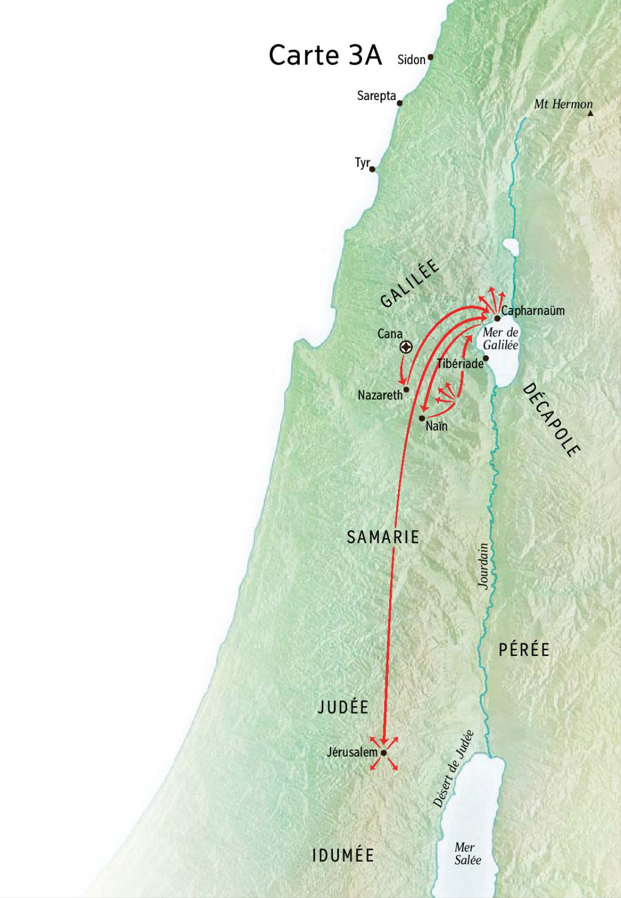

Jésus en Galilée

Carte 3
Commencement de son ministère public en Galilée
Date: +31, Janvier
Lieu: Galilée
Marc 1:14 : Jésus proclame l’Evangile en Galilée
14 Après que Jean eut été livré, Jésus vint en Galilée. Il proclamait l’Evangile de Dieu et disait : 15 « Le temps est accompli, et le Règne de Dieu s’est approché : convertissez-vous et croyez à l’Evangile. »
Luc 4:14 : Débuts de Jésus en Galilée
14 Alors Jésus, avec la puissance de l’Esprit, revint en Galilée, et sa renommée se répandit dans toute la région. 15 Il enseignait dans leurs synagogues et tous disaient sa gloire.
Luc 4:16 : Echec de la prédication à Nazareth
16 Il vint à Nazara où il avait été élevé. Il entra suivant sa coutume le jour du sabbat dans la synagogue, et il se leva pour faire la lecture. 17 On lui donna le livre du prophète Esaïe, et en le déroulant il trouva le passage où il était écrit : 18 L’Esprit du Seigneur est sur moi parce qu’il m’a conféré l’onction pour annoncer la Bonne Nouvelle aux pauvres. Il m’a envoyé proclamer aux captifs la libération et aux aveugles le retour à la vue, renvoyer les opprimés en liberté, 19 proclamer une année d’accueil par le Seigneur. 20 Il roula le livre, le rendit au servant et s’assit ; tous dans la synagogue avaient les yeux fixés sur lui. 21 Alors il commença à leur dire : « Aujourd’hui, cette écriture est accomplie pour vous qui l’entendez. » 22 Tous lui rendaient témoignage ; ils s’étonnaient du message de la grâce qui sortait de sa bouche, et ils disaient : « N’est-ce pas là le fils de Joseph ? » 23 Alors il leur dit : « Sûrement vous allez me citer ce dicton : “Médecin, guéris-toi toi-même.” Nous avons appris tout ce qui s’est passé à Capharnaüm, fais-en donc autant ici dans ta patrie. » 24 Et il ajouta : « Oui, je vous le déclare, aucun prophète ne trouve accueil dans sa patrie. 25 En toute vérité, je vous le déclare, il y avait beaucoup de veuves en Israël aux jours d’Elie, quand le ciel fut fermé trois ans et six mois et que survint une grande famine sur tout le pays ; 26 pourtant ce ne fut à aucune d’entre elles qu’Elie fut envoyé, mais bien dans le pays de Sidon, à une veuve de Sarepta. 27 Il y avait beaucoup de lépreux en Israël au temps du prophète Elisée ; pourtant aucun d’entre eux ne fut purifié, mais bien Naamân le Syrien. » 28 Tous furent remplis de colère, dans la synagogue, en entendant ces paroles. 29 Ils se levèrent, le jetèrent hors de la ville et le menèrent jusqu’à un escarpement de la colline sur laquelle était bâtie leur ville, pour le précipiter en bas. 30 Mais lui, passant au milieu d’eux, alla son chemin.
Jean 4:43 : Le second signe de Cana
43 Deux jours plus tard, Jésus quitta ces lieux et regagna la Galilée. 44 Il avait en effet attesté lui-même qu’un prophète n’est pas honoré dans sa propre patrie. 45 Cependant, lorsqu’il arriva en Galilée, les Galiléens lui firent bon accueil : ils étaient allés à Jérusalem pour la fête, eux aussi, et ils avaient pu voir tout ce que Jésus avait fait.
- Aprés que Jean eut été livré Marc 1:14
Il s’établit à Capharnaüm où il enseigne
Date: +31, Janvier-Mars
Lieu: Capharnaüm, Galilée
Marc 1:21 : Jésus manifeste son autorité à la synagogue de Capharnaüm
21 Ils pénètrent dans Capharnaüm. Et dès le jour du sabbat, entré dans la synagogue, Jésus enseignait. 22 Ils étaient frappés de son enseignement, car il les enseignait en homme qui a autorité et non pas comme les scribes.
Luc 4:31 : Jésus à Capharnaüm. Autorité de sa parole
31 Il descendit alors à Capharnaüm, ville de Galilée. Il les enseignait le jour du sabbat, 32 et ils étaient frappés de son enseignement parce que sa parole était pleine d’autorité.
Matthieu 4:13 : Jésus se retire en Galilée
13 Puis, abandonnant Nazara, il vint habiter à Capharnaüm, au bord de la mer, dans les territoires de Zabulon et de Nephtali, 14 pour que s’accomplisse ce qu’avait dit le prophète Esaïe : 15 Terre de Zabulon, terre de Nephtali, route de la mer, pays au-delà du Jourdain, Galilée des Nations ! 16 Le peuple qui se trouvait dans les ténèbres a vu une grande lumière ; pour ceux qui se trouvaient dans le sombre pays de la mort, une lumière s’est levée. 17 A partir de ce moment, Jésus commença à proclamer : « Convertissez-vous : le Règne des cieux s’est approché. » Appel des premiers disciples
La pêche miraculeuse ; l’appel de Simon, d’André, de Jacques et de Jean
Date: +31, Janvier-Mars
Lieu: Lac de Tibériade, près de Capharnaüm, Galilée
Marc 1:16 : Appel de quatre pêcheurs
16 Comme il passait le long de la mer de Galilée, il vit Simon et André, le frère de Simon, en train de jeter le filet dans la mer : c’étaient des pêcheurs. 17 Jésus leur dit : « Venez à ma suite, et je ferai de vous des pêcheurs d’hommes. » 18 Laissant aussitôt leurs filets, ils le suivirent. 19 Avançant un peu, il vit Jacques, fils de Zébédée, et Jean son frère, qui étaient dans leur barque en train d’arranger leurs filets. 20 Aussitôt, il les appela. Et laissant dans la barque leur père Zébédée avec les ouvriers, ils partirent à sa suite.
Luc 5:1 : Pêche miraculeuse. Simon, Jacques et Jean suivent Jésus
1 Or, un jour, la foule se serrait contre lui à l’écoute de la parole de Dieu ; il se tenait au bord du lac de Gennésareth. 2 Il vit deux barques qui se trouvaient au bord du lac ; les pêcheurs qui en étaient descendus lavaient leurs filets. 3 Il monta dans l’une des barques, qui appartenait à Simon, et demanda à celui-ci de quitter le rivage et d’avancer un peu ; puis il s’assit et, de la barque, il enseignait les foules. 4 Quand il eut fini de parler, il dit à Simon : « Avance en eau profonde, et jetez vos filets pour attraper du poisson. » 5 Simon répondit : « Maître, nous avons peiné toute la nuit sans rien prendre ; mais, sur ta parole, je vais jeter les filets. » 6 Ils le firent et capturèrent une grande quantité de poissons ; leurs filets se déchiraient. 7 Ils firent signe à leurs camarades de l’autre barque de venir les aider ; ceux-ci vinrent et ils remplirent les deux barques au point qu’elles enfonçaient. 8 A cette vue, Simon-Pierre tomba aux genoux de Jésus en disant : « Seigneur, éloigne-toi de moi, car je suis un coupable. » 9 C’est que l’effroi l’avait saisi, lui et tous ceux qui étaient avec lui, devant la quantité de poissons qu’ils avaient pris ; 10 de même Jacques et Jean, fils de Zébédée, qui étaient les compagnons de Simon. Jésus dit à Simon : « Sois sans crainte, désormais ce sont des hommes que tu auras à capturer. » 11 Ramenant alors les barques à terre, laissant tout, ils le suivirent.
Matthieu 4:18 : Appel des premiers disciples
18 Comme il marchait le long de la mer de Galilée, il vit deux frères, Simon appelé Pierre et André, son frère, en train de jeter le filet dans la mer : c’étaient des pêcheurs. 19 Il leur dit : « Venez à ma suite et je vous ferai pêcheurs d’hommes. » 20 Laissant aussitôt leurs filets, ils le suivirent. 21 Avançant encore, il vit deux autres frères : Jacques, fils de Zébédée, et Jean son frère, dans leur barque, avec Zébédée leur père, en train d’arranger leurs filets. Il les appela. 22 Laissant aussitôt leur barque et leur père, ils le suivirent.
Jésus parcourt la Galilée avec ses disciples
Date: +31, Janvier-Mars
Lieu: Galilée
Marc 1:35 : Jésus quitte Capharnaüm
35 Au matin, à la nuit noire, Jésus se leva, sortit et s’en alla dans un lieu désert ; là, il priait. 36 Simon se mit à sa recherche, ainsi que ses compagnons, 37 et ils le trouvèrent. Ils lui disent : « Tout le monde te cherche. » 38 Et il leur dit : « Allons ailleurs, dans les bourgs voisins, pour que j’y proclame aussi l’Evangile : car c’est pour cela que je suis sorti. » 39 Et il alla par toute la Galilée ; il prêchait dans leurs synagogues et chassait les démons.
Luc 4:42 : Départ de Capharnaüm
42 Quand il fit jour, il sortit et se rendit dans un lieu désert. Les foules le recherchaient ; puis, l’ayant rejoint, elles voulaient le retenir de peur qu’il ne s’éloignât d’eux. 43 Mais il leur dit : « Aux autres villes aussi il me faut annoncer la bonne nouvelle du Règne de Dieu, car c’est pour cela que j’ai été envoyé. » 44 Et il prêchait dans les synagogues de la Judée.
Matthieu 4:23 : Jésus et les foules
23 Puis, parcourant toute la Galilée, il enseignait dans leurs synagogues, proclamait la Bonne Nouvelle du Règne et guérissait toute maladie et toute infirmité parmi le peuple. 24 Sa renommée gagna toute la Syrie, et on lui amena tous ceux qui souffraient, en proie à toutes sortes de maladies et de tourments : démoniaques, lunatiques, paralysés ; il les guérit. 25 Et de grandes foules le suivirent, venues de la Galilée et de la Décapole, de Jérusalem et de la Judée, et d’au-delà du Jourdain.
Jésus délivre un démoniaque
Date: +31, Janvier-Mars
Lieu: Galilée
Marc 1:23 : Jésus manifeste son autorité à la synagogue de Capharnaüm
23 Justement il y avait dans leur synagogue un homme possédé d’un esprit impur ; il s’écria : 24 « Que nous veux-tu, Jésus de Nazareth ? tu es venu pour nous perdre. Je sais qui tu es : le Saint de Dieu. » 25 Jésus lui commanda sévèrement : « Tais-toi et sors de cet homme. » 26 L’esprit impur le secoua avec violence et il sortit de lui en poussant un grand cri. 27 Ils furent tous tellement saisis qu’ils se demandaient les uns aux autres : « Qu’est-ce que cela ? Voilà un enseignement nouveau, plein d’autorité ! Il commande même aux esprits impurs et ils lui obéissent ! » 28 Et sa renommée se répandit aussitôt partout, dans toute la région de Galilée.
Luc 4:33 : Jésus à Capharnaüm. Autorité de sa parole
33 Il y avait dans la synagogue un homme qui avait un esprit de démon impur. Il s’écria d’une voix forte : 34 « Ah ! que nous veux-tu, Jésus de Nazareth ? Tu es venu pour nous perdre. Je sais qui tu es : le Saint de Dieu. » 35 Jésus lui commanda sévèrement : « Tais-toi et sors de cet homme » ; et jetant l’homme à terre au milieu d’eux, le démon sortit de lui sans lui faire aucun mal. 36 Tous furent saisis d’effroi, et ils se disaient les uns aux autres : « Qu’est-ce que cette parole ! Il commande avec autorité et puissance aux esprits impurs, et ils sortent. » 37 Et son renom se propageait en tout lieu de la région.
Guérison de la belle-mère de Simon Pierre et d’autres malades
Date: +31, Janvier-Mars
Lieu: Capharnaüm, Galilée
Marc 1:29 : Guérison de la belle-mère de Simon
29 Juste en sortant de la synagogue, ils allèrent, avec Jacques et Jean, dans la maison de Simon et d’André. 30 Or la belle-mère de Simon était couchée, elle avait de la fièvre ; aussitôt on parle d’elle à Jésus. 31 Il s’approcha et la fit lever en lui prenant la main : la fièvre la quitta et elle se mit à les servir.
Marc 1:32 : Guérisons après le sabbat
32 Le soir venu, après le coucher du soleil, on se mit à lui amener tous les malades et les démoniaques. 33 La ville entière était rassemblée à la porte. 34 Il guérit de nombreux malades souffrant de maux de toutes sortes et il chassa de nombreux démons ; et il ne laissait pas parler les démons, parce que ceux-ci le connaissaient.
Luc 4:38 : Guérisons
38 Quittant la synagogue, il entra dans la maison de Simon. La belle-mère de Simon était en proie à une forte fièvre, et ils le prièrent de faire quelque chose pour elle. 39 Il se pencha sur elle, il commanda sévèrement à la fièvre, et celle-ci la quitta ; et se levant aussitôt, elle se mit à les servir. 40 Au coucher du soleil, tous ceux qui avaient des malades de toutes sortes les lui amenèrent ; et lui, imposant les mains à chacun d’eux, les guérissait. 41 Des démons aussi sortaient d’un grand nombre en criant : « Tu es le Fils de Dieu ! » Alors, leur commandant sévèrement, il ne leur permettait pas de parler, parce qu’ils savaient qu’il était le Messie.
Matthieu 8:14 : Guérison de la belle-mère de Pierre
14 Comme Jésus entrait dans la maison de Pierre, il vit sa belle-mère couchée, et avec de la fièvre. 15 Il lui toucha la main, et la fièvre la quitta ; elle se leva et se mit à le servir.
Matthieu 8:16 : Guérisons et exorcismes
16 Le soir venu, on lui amena de nombreux démoniaques. Il chassa les esprits d’un mot et il guérit tous les malades, 17 pour que s’accomplisse ce qui avait été dit par le prophète Esaïe : C’est lui qui a pris nos infirmités et s’est chargé de nos maladies.
Il visite Cana et guérit le fils d’un noble de Capharnaüm
Date: +31, Janvier-Mars
Lieu: Capharnaüm, Galilée
Jean 4:46 : Le second signe de Cana
46 Jésus revint donc à Cana de Galilée où il avait fait du vin avec de l’eau. Il y avait un officier royal dont le fils était malade à Capharnaüm. 47 Ayant entendu dire que Jésus arrivait de Judée en Galilée, il vint le trouver et le priait de descendre guérir son fils qui se mourait. 48 Jésus lui dit : « Si vous ne voyez signes et prodiges, vous ne croirez donc jamais ! » 49 L’officier lui dit : « Seigneur, descends avant que mon enfant ne meure ! » 50 Jésus lui dit : « Va, ton fils vit. » Cet homme crut à la parole que Jésus lui avait dite et il se mit en route. 51 Tandis qu’il descendait, ses serviteurs vinrent à sa rencontre et dirent : « Ton enfant vit ! » 52 Il leur demanda à quelle heure il s’était trouvé mieux et ils répondirent : « C’est hier, à la septième heure, que la fièvre l’a quitté. » 53 Le père constata que c’était à cette heure même que Jésus lui avait dit : « Ton fils vit. » Dès lors il crut, lui et toute sa maisonnée. 54 Tel fut le second signe que Jésus accomplit lorsqu’il revint de Judée en Galilée.
Il guérit un lépreux et fuyant la popularité, se retire au désert
Date: +31, Mars-Avril
Marc 1:40 : Purification d’un lépreux
40 Un lépreux s’approche de lui ; il le supplie et tombe à genoux en lui disant : « Si tu le veux, tu peux me purifier. » 41 Pris de pitié, Jésus étendit la main et le toucha. Il lui dit : « Je le veux, sois purifié. » 42 A l’instant, la lèpre le quitta et il fut purifié. 43 S’irritant contre lui, Jésus le renvoya aussitôt. 44 Il lui dit : « Garde-toi de rien dire à personne, mais va te montrer au prêtre et offre pour ta purification ce que Moïse a prescrit : ils auront là un témoignage. » 45 Mais une fois parti, il se mit à proclamer bien haut et à répandre la nouvelle, si bien que Jésus ne pouvait plus entrer ouvertement dans une ville, mais qu’il restait dehors en des endroits déserts. Et l’on venait à lui de toute part.
Luc 5:12 : Purification d’un lépreux
12 Or, comme il était dans une de ces villes, un homme couvert de lèpre se trouvait là. A la vue de Jésus, il tomba la face contre terre et lui adressa cette prière : « Seigneur, si tu le veux, tu peux me purifier. » 13 Jésus étendit la main, le toucha et dit : « Je le veux, sois purifié », et à l’instant la lèpre le quitta. 14 Alors Jésus lui ordonna de n’en parler à personne : « Va-t’en plutôt te montrer au prêtre et fais l’offrande pour ta purification comme Moïse l’a prescrit : ils auront là un témoignage. » 15 On parlait de lui de plus en plus, et de grandes foules s’assemblaient pour l’entendre et se faire guérir de leurs maladies. 16 Et lui se retirait dans les lieux déserts et il priait.
Matthieu 8:1 : Guérison d’un lépreux
1 Comme il descendait de la montagne, de grandes foules le suivirent. 2 Voici qu’un lépreux s’approcha et, prosterné devant lui, disait : « Seigneur, si tu le veux, tu peux me purifier. » 3 Il étendit la main, le toucha et dit : « Je le veux, sois purifié ! » A l’instant, il fut purifié de sa lèpre. 4 Et Jésus lui dit : « Garde-toi d’en dire mot à personne, mais va te montrer au prêtre et présente l’offrande que Moïse a prescrite : ils auront là un témoignage. »
De retour à Capharnaüm, il guérit un paralytique qui lui est amené et descendu par le toit
Date: +31
Lieu: Capharnaüm, Galilée
Marc 2:1 : Pardon et guérison d’un paralysé à Capharnaüm
1 Quelques jours après, Jésus rentra à Capharnaüm et l’on apprit qu’il était à la maison. 2 Et tant de monde s’y rassembla qu’il n’y avait plus de place, pas même devant la porte. Et il leur annonçait la Parole. 3 Arrivent des gens qui lui amènent un paralysé porté par quatre hommes. 4 Et comme ils ne pouvaient l’amener jusqu’à lui à cause de la foule, ils ont découvert le toit au-dessus de l’endroit où il était et, faisant une ouverture, ils descendent le brancard sur lequel le paralysé était couché. 5 Voyant leur foi, Jésus dit au paralysé : « Mon fils, tes péchés sont pardonnés. » 6 Quelques scribes étaient assis là et raisonnaient en leurs cœurs : 7 « Pourquoi cet homme parle-t-il ainsi ? Il blasphème. Qui peut pardonner les péchés sinon Dieu seul ? » 8 Connaissant aussitôt en son esprit qu’ils raisonnaient ainsi en eux-mêmes, Jésus leur dit : « Pourquoi tenez-vous ces raisonnements en vos cœurs ? 9 Qu’y a-t-il de plus facile, de dire au paralysé : “Tes péchés sont pardonnés”, ou bien de dire : “Lève-toi, prends ton brancard et marche” ? 10 Eh bien ! afin que vous sachiez que le Fils de l’homme a autorité pour pardonner les péchés sur la terre… » – il dit au paralysé : 11 « Je te dis : lève-toi, prends ton brancard et va dans ta maison. » 12 L’homme se leva, il prit aussitôt son brancard et il sortit devant tout le monde, si bien que tous étaient bouleversés et rendaient gloire à Dieu en disant : « Nous n’avons jamais rien vu de pareil ! »
Luc 5:17 : La guérison d’un paralysé, signe de pardon
17 Or, un jour qu’il était en train d’enseigner, il y avait dans l’assistance des Pharisiens et des docteurs de la loi qui étaient venus de tous les villages de Galilée et de Judée ainsi que de Jérusalem ; et la puissance du Seigneur était à l’œuvre pour lui faire opérer des guérisons. 18 Survinrent des gens portant sur une civière un homme qui était paralysé ; ils cherchaient à le faire entrer et à le placer devant lui ; 19 et comme, à cause de la foule, ils ne voyaient pas par où le faire entrer, ils montèrent sur le toit et, au travers des tuiles, ils le firent descendre avec sa civière en plein milieu, devant Jésus. 20 Voyant leur foi, il dit : « Tes péchés te sont pardonnés. » 21 Les scribes et les Pharisiens se mirent à raisonner : « Quel est cet homme qui dit des blasphèmes ? Qui peut pardonner les péchés, sinon Dieu seul ? » 22 Mais Jésus, connaissant leurs raisonnements, leur rétorqua : « Pourquoi raisonnez-vous dans vos cœurs ? 23 Qu’y a-t-il de plus facile, de dire : “Tes péchés te sont pardonnés” ou bien de dire : “Lève-toi et marche” ? 24 Eh bien, afin que vous sachiez que le Fils de l’homme a sur la terre autorité pour pardonner les péchés, – il dit au paralysé : “Je te dis, lève-toi, prends ta civière et va dans ta maison.” » 25 A l’instant, celui-ci se leva devant eux, il prit ce qui lui servait de lit et il partit pour sa maison en rendant gloire à Dieu. 26 La stupeur les saisit tous et ils rendaient gloire à Dieu ; remplis de crainte, ils disaient : « Nous avons vu aujourd’hui des choses extraordinaires. »
Matthieu 9:2 : Guérison d’un paralysé
2 Voici qu’on lui amenait un paralysé étendu sur une civière. Voyant leur foi, Jésus dit au paralysé : « Confiance, mon fils, tes péchés sont pardonnés. » 3 Or, quelques scribes se dirent en eux-mêmes : « Cet homme blasphème ! » 4 Voyant leurs réactions, Jésus dit : « Pourquoi réagissez-vous mal en vos cœurs ? 5 Qu’y a-t-il donc de plus facile, de dire : “Tes péchés sont pardonnés”, ou bien de dire : “Lève-toi et marche” ? 6 Eh bien ! afin que vous sachiez que le Fils de l’homme a sur la terre autorité pour pardonner les péchés… » – il dit alors au paralysé : « Lève-toi, prends ta civière et va dans ta maison. » 7 L’homme se leva et s’en alla dans sa maison. 8 Voyant cela, les foules furent saisies de crainte et rendirent gloire à Dieu qui a donné une telle autorité aux hommes.
L’appel de Matthieu, le festin et le discours dans sa maison — l’habit neuf et le vin nouveau
Date: +31
Lieu: Capharnaüm, Galilée
Marc 2:13 : Appel de Lévi et accueil des pécheurs
13 Jésus s’en alla de nouveau au bord de la mer. Toute la foule venait à lui, et il les enseignait. 14 En passant, il vit Lévi, le fils d’Alphée, assis au bureau des taxes. Il lui dit : « Suis-moi. » Il se leva et le suivit. 15 Le voici à table dans sa maison, et beaucoup de collecteurs d’impôts et de pécheurs avaient pris place avec Jésus et ses disciples, car ils étaient nombreux et ils le suivaient. 16 Et des scribes pharisiens, voyant qu’il mangeait avec les pécheurs et les collecteurs d’impôts, disaient à ses disciples : « Quoi ? Il mange avec les collecteurs d’impôts et les pécheurs ? » 17 Jésus, qui avait entendu, leur dit : « Ce ne sont pas les bien portants qui ont besoin de médecin, mais les malades ; je suis venu appeler non pas les justes, mais les pécheurs. »
Luc 5:27 : Vocation de Lévi et appel des pécheurs
27 Après cela, il sortit et vit un collecteur d’impôts du nom de Lévi assis au bureau des taxes. Il lui dit : « Suis-moi. » 28 Quittant tout, il se leva et se mit à le suivre. 29 Lévi fit à Jésus un grand festin dans sa maison ; et il y avait toute une foule de collecteurs d’impôts et d’autres gens qui étaient à table avec eux. 30 Les Pharisiens et leurs scribes murmuraient, disant à ses disciples : « Pourquoi mangez-vous et buvez-vous avec les collecteurs d’impôts et les pécheurs ? » 31 Jésus prenant la parole leur dit : « Ce ne sont pas les bien portants qui ont besoin de médecin, mais les malades. 32 Je suis venu appeler non pas les justes, mais les pécheurs pour qu’ils se convertissent. »
Matthieu 9:9 : Jésus appelle Matthieu
9 Comme il s’en allait, Jésus vit, en passant, assis au bureau des taxes, un homme qui s’appelait Matthieu. Il lui dit : « Suis-moi. » Il se leva et le suivit. 10 Or, comme il était à table dans sa maison, il arriva que beaucoup de collecteurs d’impôts et de pécheurs étaient venus prendre place avec Jésus et ses disciples. 11 Voyant cela, les Pharisiens disaient à ses disciples : « Pourquoi votre maître mange-t-il avec les collecteurs d’impôts et les pécheurs ? » 12 Mais Jésus, qui avait entendu, déclara : « Ce ne sont pas les bien portants qui ont besoin de médecin, mais les malades. 13 Allez donc apprendre ce que signifie : C’est la miséricorde que je veux, non le sacrifice. Car je suis venu appeler non pas les justes, mais les pécheurs. »
Réponse à ceux qui l’interrogent sur le jeûne
Date: +31
Lieu: Capharnaüm, Galilée
Marc 2:18 : Question sur le jeûne. Le vieux et le neuf
18 Les disciples de Jean et les Pharisiens étaient en train de jeûner. Ils viennent dire à Jésus : « Pourquoi, alors que les disciples de Jean et les disciples des Pharisiens jeûnent, tes disciples ne jeûnent-ils pas ? » 19 Jésus leur dit : « Les invités à la noce peuvent-ils jeûner pendant que l’époux est avec eux ? Tant qu’ils ont l’époux avec eux, ils ne peuvent pas jeûner. 20 Mais des jours viendront où l’époux leur aura été enlevé ; alors ils jeûneront, ce jour-là. 21 Personne ne coud une pièce d’étoffe neuve à un vieux vêtement ; sinon le morceau neuf qu’on ajoute tire sur le vieux vêtement, et la déchirure est pire. 22 Personne ne met du vin nouveau dans de vieilles outres ; sinon, le vin fera éclater les outres, et l’on perd à la fois le vin et les outres ; mais à vin nouveau, outres neuves. »
Luc 5:33 : Question sur le jeûne
33 Ils lui dirent : « Les disciples de Jean jeûnent souvent et font des prières, de même ceux des Pharisiens, tandis que les tiens mangent et boivent. » 34 Jésus leur dit : « Est-ce que vous pouvez faire jeûner les invités à la noce pendant que l’époux est avec eux ? 35 Mais des jours viendront où l’époux leur aura été enlevé, alors ils jeûneront en ces jours-là. »
Luc 5:36 : Le vieux et le neuf
36 Il leur dit encore une parabole : « Personne ne déchire un morceau dans un vêtement neuf pour mettre une pièce à un vieux vêtement ; sinon, et on aura déchiré le neuf et la pièce tirée du neuf n’ira pas avec le vieux. 37 Personne ne met du vin nouveau dans de vieilles outres ; sinon le vin nouveau fera éclater les outres et le vin se répandra, et les outres seront perdues. 38 Mais il faut mettre le vin nouveau dans des outres neuves. 39 Quiconque boit du vin vieux n’en désire pas du nouveau, car il dit : “Le vieux est meilleur.” »
Matthieu 9:14 : Question sur le jeûne. Le vieux et le neuf
14 Alors les disciples de Jean l’abordent et lui disent : « Pourquoi, alors que nous et les Pharisiens nous jeûnons, tes disciples ne jeûnent-ils pas ? » 15 Jésus leur dit : « Les invités à la noce peuvent-ils être en deuil tant que l’époux est avec eux ? Mais des jours viendront où l’époux leur aura été enlevé : c’est alors qu’ils jeûneront. 16 Personne ne met une pièce d’étoffe neuve à un vieux vêtement ; car le morceau rajouté tire sur le vêtement, et la déchirure est pire. 17 On ne met pas du vin nouveau dans de vieilles outres ; sinon, les outres éclatent, le vin se répand et les outres sont perdues. On met au contraire le vin nouveau dans des outres neuves, et l’un et l’autre se conservent. »
Passant par les champs, les disciples cueillent des épis le jour du sabbat
Date: +31, Avril-Mai
Marc 2:23 : Les épis arrachés et l’observation du sabbat
23 Or Jésus, un jour de sabbat, passait à travers des champs de blé et ses disciples se mirent, chemin faisant, à arracher des épis. 24 Les Pharisiens lui disaient : « Regarde ce qu’ils font le jour du sabbat ! Ce n’est pas permis. » 25 Et il leur dit : « Vous n’avez donc jamais lu ce qu’a fait David lorsqu’il s’est trouvé dans le besoin et qu’il a eu faim, lui et ses compagnons, 26 comment, au temps du grand prêtre Abiatar, il est entré dans la maison de Dieu, a mangé les pains de l’offrande que personne n’a le droit de manger, sauf les prêtres, et en a donné aussi à ceux qui étaient avec lui ? » 27 Et il leur disait : « Le sabbat a été fait pour l’homme et non l’homme pour le sabbat, 28 de sorte que le Fils de l’homme est maître même du sabbat. »
Luc 6:1 : Les épis arrachés le jour du sabbat
1 Or, un second sabbat du premier mois, comme il traversait des champs de blé, ses disciples arrachaient des épis, les frottaient dans leurs mains et les mangeaient. 2 Quelques Pharisiens dirent : « Pourquoi faites-vous ce qui n’est pas permis le jour du sabbat ? » 3 Jésus leur répondit : « Vous n’avez même pas lu ce que fit David lorsqu’il eut faim, lui et ses compagnons ? 4 Comment il entra dans la maison de Dieu, prit les pains de l’offrande, en mangea et en donna à ses compagnons : ces pains que personne n’a le droit de manger, sauf les prêtres et eux seuls ? » 5 Et il leur disait : « Il est maître du sabbat, le Fils de l’homme. »
Matthieu 12:1 : Les épis arrachés
1 En ce temps-là, un jour de sabbat, Jésus vint à passer à travers des champs de blé. Ses disciples eurent faim et se mirent à arracher des épis et à les manger. 2 Voyant cela, les Pharisiens lui dirent : « Vois tes disciples qui font ce qu’il n’est pas permis de faire pendant le sabbat. » 3 Il leur répondit : « N’avez-vous pas lu ce que fit David, lorsqu’il eut faim, lui et ses compagnons, 4 comment il est entré dans la maison de Dieu et comment ils ont mangé les pains de l’offrande, que ni lui, ni ses compagnons n’avaient le droit de manger, mais seulement les prêtres ? 5 Ou n’avez-vous pas lu dans la Loi que, le jour du sabbat, dans le temple, les prêtres profanent le sabbat sans être en faute ? 6 Or, je vous le déclare, il y a ici plus grand que le temple. 7 Si vous aviez compris ce que signifie : C’est la miséricorde que je veux, non le sacrifice, vous n’auriez pas condamné ces hommes qui ne sont pas en faute. 8 Car il est maître du sabbat, le Fils de l’homme. »
Jésus guérit un homme qui avait la main sèche ; les pharisiens et les hérodiens complotent contre Lui
Date: +31
Lieu: Galilée
Marc 3:1 : Guérison un jour de sabbat
1 Il entra de nouveau dans une synagogue ; il y avait là un homme qui avait la main paralysée. 2 Ils observaient Jésus pour voir s’il le guérirait le jour du sabbat ; c’était pour l’accuser. 3 Jésus dit à l’homme qui avait la main paralysée : « Lève-toi ! viens au milieu. » 4 Et il leur dit : « Ce qui est permis le jour du sabbat, est-ce de faire le bien ou de faire le mal ? de sauver un être vivant ou de le tuer ? » Mais eux se taisaient. 5 Promenant sur eux un regard de colère, navré de l’endurcissement de leur cœur, il dit à cet homme : « Etends la main. » Il l’étendit et sa main fut guérie. 6 Une fois sortis, les Pharisiens tinrent aussitôt conseil avec les Hérodiens contre Jésus sur les moyens de le faire périr.
Luc 6:6 : Guérison d’un homme à la main paralysée, le jour du sabbat
6 Un autre jour de sabbat, il entra dans la synagogue et il enseigna ; il y avait là un homme dont la main droite était paralysée. 7 Les scribes et les Pharisiens observaient Jésus pour voir s’il ferait une guérison le jour du sabbat, afin de trouver de quoi l’accuser. 8 Mais lui savait leurs raisonnements ; il dit à l’homme qui avait la main paralysée : « Lève-toi et tiens-toi là au milieu. » Il se leva et se tint debout. 9 Jésus leur dit : « Je vous demande s’il est permis le jour du sabbat de faire le bien ou de faire le mal, de sauver une vie ou de la perdre. » 10 Et les regardant tous à la ronde, il dit à l’homme : « Etends la main. » Il le fit et sa main fut guérie. 11 Eux furent remplis de fureur et ils parlaient entre eux de ce qu’ils pourraient faire à Jésus.
Matthieu 12:9 : L’homme à la main paralysée
9 De là, il se dirigea vers leur synagogue et y entra. 10 Or se trouvait là un homme qui avait une main paralysée ; ils lui posèrent cette question : « Est-il permis de faire une guérison le jour du sabbat ? » C’était pour l’accuser. 11 Mais il leur dit : « Qui d’entre vous, s’il n’a qu’une brebis et qu’elle tombe dans un trou le jour du sabbat, n’ira la prendre et l’en retirer ? 12 Or, combien l’homme l’emporte sur la brebis ! Il est donc permis de faire le bien le jour du sabbat. » 13 Alors il dit à cet homme : « Etends la main. » Il l’étendit et elle fut remise en état, aussi saine que l’autre. 14 Une fois sortis, les Pharisiens tinrent conseil contre lui, sur les moyens de le faire périr.
Il se retire près du lac et guérit plusieurs personnes
Date: +31
Lieu: Lac de Tibériade, Galilée
Marc 3:7 : Jésus et la foule
7 Jésus se retira avec ses disciples au bord de la mer. Une grande multitude venue de la Galilée le suivit. Et de la Judée, 8 de Jérusalem, de l’Idumée, d’au-delà du Jourdain, du pays de Tyr et Sidon, une grande multitude vint à lui, à la nouvelle de tout ce qu’il faisait. 9 Il dit à ses disciples de tenir une barque prête pour lui à cause de la foule qui risquait de l’écraser. 10 Car il en avait tant guéri que tous ceux qui étaient frappés de quelque mal se jetaient sur lui pour le toucher. 11 Les esprits impurs, quand ils le voyaient, se jetaient à ses pieds et criaient : « Tu es le Fils de Dieu. » 12 Et il leur commandait très sévèrement de ne pas le faire connaître.
Luc 6:17 : Jésus et la foule
17 Descendant avec eux, il s’arrêta sur un endroit plat avec une grande foule de ses disciples et une grande multitude du peuple de toute la Judée, de Jérusalem et du littoral de Tyr et de Sidon ; 18 ils étaient venus pour l’entendre et se faire guérir de leurs maladies ; ceux qui étaient affligés d’esprits impurs étaient guéris ; 19 et toute la foule cherchait à le toucher, parce qu’une force sortait de lui et les guérissait tous.
Matthieu 12:15 : Jésus, le serviteur de Dieu
15 L’ayant appris, Jésus se retira de là. Beaucoup le suivirent ; il les guérit tous. 16 Il leur commanda sévèrement de ne pas le faire connaître, 17 afin que soit accompli ce qu’a dit le prophète Esaïe : 18 Voici mon serviteur que j’ai élu, mon Bien-Aimé qu’il m’a plu de choisir, je mettrai mon Esprit sur lui, et il annoncera le droit aux nations. 19 Il ne cherchera pas de querelles, il ne poussera pas de cris, on n’entendra pas sa voix sur les places. 20 Il ne brisera pas le roseau froissé, il n’éteindra pas la mèche qui fume encore, jusqu’à ce qu’il ait conduit le droit à la victoire. 21 En son nom les nations mettront leur espérance.
Jésus choisit et nomme les douze apôtres
Date: +31
Lieu: Galilée
Marc 3:13 : Institution des Douze
13 Il monte dans la montagne et il appelle ceux qu’il voulait. Ils vinrent à lui 14 et il en établit douze pour être avec lui et pour les envoyer prêcher 15 avec pouvoir de chasser les démons. 16 Il établit les Douze : Pierre – c’est le surnom qu’il a donné à Simon –, 17 Jacques, le fils de Zébédée et Jean, le frère de Jacques – et il leur donna le surnom de Boanerguès, c’est-à-dire fils du tonnerre –, 18 André, Philippe, Barthélemy, Matthieu, Thomas, Jacques, le fils d’Alphée, Thaddée et Simon le zélote, 19 et Judas Iscarioth, celui-là même qui le livra.
Luc 6:12 : Choix des douze apôtres
12 En ces jours-là, Jésus s’en alla dans la montagne pour prier et il passa la nuit à prier Dieu ; 13 puis, le jour venu, il appela ses disciples et en choisit douze, auxquels il donna le nom d’apôtres : 14 Simon, auquel il donna le nom de Pierre, André son frère, Jacques, Jean, Philippe, Barthélemy, 15 Matthieu, Thomas, Jacques fils d’Alphée, Simon qu’on appelait le zélote, 16 Jude fils de Jacques et Judas Iscarioth qui devint traître.
Le sermon sur la montagne
Date: +31
Lieu: Près de Capharnaüm, Galilée
Luc 6:20 : Prédication à la foule. Les heureux et les malheureux
20 Alors, levant les yeux sur ses disciples, Jésus dit : « Heureux, vous les pauvres : le Royaume de Dieu est à vous. 21 Heureux, vous qui avez faim maintenant : vous serez rassasiés. Heureux, vous qui pleurez maintenant : vous rirez. 22 Heureux êtes-vous lorsque les hommes vous haïssent, lorsqu’ils vous rejettent et qu’ils insultent et proscrivent votre nom comme infâme, à cause du Fils de l’homme. 23 Réjouissez-vous ce jour-là et bondissez de joie, car voici, votre récompense est grande dans le ciel ; c’est en effet de la même manière que leurs pères traitaient les prophètes. 24 Mais malheureux, vous les riches : vous tenez votre consolation. 25 Malheureux, vous qui êtes repus maintenant : vous aurez faim. Malheureux, vous qui riez maintenant : vous serez dans le deuil et vous pleurerez. 26 Malheureux êtes-vous lorsque tous les hommes disent du bien de vous : c’est en effet de la même manière que leurs pères traitaient les faux prophètes.
Luc 6:27 : L’amour des ennemis
27 « Mais je vous dis, à vous qui m’écoutez : Aimez vos ennemis, faites du bien à ceux qui vous haïssent, 28 bénissez ceux qui vous maudissent, priez pour ceux qui vous calomnient. 29 « A qui te frappe sur une joue, présente encore l’autre. A qui te prend ton manteau, ne refuse pas non plus ta tunique. 30 A quiconque te demande, donne, et à qui te prend ton bien, ne le réclame pas. 31 Et comme vous voulez que les hommes agissent envers vous, agissez de même envers eux. 32 « Si vous aimez ceux qui vous aiment, quelle reconnaissance vous en a-t-on ? Car les pécheurs aussi aiment ceux qui les aiment. 33 Et si vous faites du bien à ceux qui vous en font, quelle reconnaissance vous en a-t-on ? Les pécheurs eux-mêmes en font autant. 34 Et si vous prêtez à ceux dont vous espérez qu’ils vous rendent, quelle reconnaissance vous en a-t-on ? Même des pécheurs prêtent aux pécheurs pour qu’on leur rende l’équivalent. 35 Mais aimez vos ennemis, faites du bien et prêtez sans rien espérer en retour. Alors votre récompense sera grande, et vous serez les fils du Très-Haut, car il est bon, lui, pour les ingrats et les méchants.
Luc 6:36 : La générosité envers le prochain
36 « Soyez généreux comme votre Père est généreux. 37 Ne vous posez pas en juges et vous ne serez pas jugés, ne condamnez pas et vous ne serez pas condamnés, acquittez et vous serez acquittés. 38 Donnez et on vous donnera ; c’est une bonne mesure, tassée, secouée, débordante qu’on vous versera dans le pan de votre vêtement, car c’est la mesure dont vous vous servez qui servira aussi de mesure pour vous. » 39 Il leur dit aussi une parabole : « Un aveugle peut-il guider un aveugle ? Ne tomberont-ils pas tous les deux dans un trou ? 40 Le disciple n’est pas au-dessus de son maître, mais tout disciple bien formé sera comme son maître. 41 « Qu’as-tu à regarder la paille qui est dans l’œil de ton frère ? Et la poutre qui est dans ton œil à toi, tu ne la remarques pas ? 42 Comment peux-tu dire à ton frère : “Frère, attends. Que j’ôte la paille qui est dans ton œil”, toi qui ne vois pas la poutre qui est dans le tien ? Homme au jugement perverti, ôte d’abord la poutre de ton œil ! et alors tu verras clair pour ôter la paille qui est dans l’œil de ton frère.
Luc 6:43 : Le vrai disciple
43 « Il n’y a pas de bon arbre qui produise un fruit malade, et pas davantage d’arbre malade qui produise un bon fruit. 44 Chaque arbre en effet se reconnaît au fruit qui lui est propre : ce n’est pas sur un buisson d’épines que l’on cueille des figues, ni sur des ronces que l’on récolte du raisin. 45 L’homme bon, du bon trésor de son cœur, tire le bien, et le mauvais, de son mauvais trésor, tire le mal ; car ce que dit la bouche, c’est ce qui déborde du cœur. 46 « Et pourquoi m’appelez-vous “Seigneur, Seigneur” et ne faites-vous pas ce que je dis ? 47 « Tout homme qui vient à moi, qui entend mes paroles et qui les met en pratique, je vais vous montrer à qui il est comparable. 48 « Il est comparable à un homme qui bâtit une maison : il a creusé, il est allé profond et a posé les fondations sur le roc. Une crue survenant, le torrent s’est jeté contre cette maison mais n’a pu l’ébranler, parce qu’elle était bien bâtie. 49 « Mais celui qui entend et ne met pas en pratique est comparable à un homme qui a bâti une maison sur le sol, sans fondations : le torrent s’est jeté contre elle, et aussitôt elle s’est effondrée, et la destruction de cette maison a été totale. »
Matthieu 5:1 : Le sermon sur la montagne
1 A la vue des foules, Jésus monta dans la montagne. Il s’assit, et ses disciples s’approchèrent de lui. 2 Et, prenant la parole, il les enseignait :
Matthieu 5:3 : Les béatitudes
3 « Heureux les pauvres de cœur : le Royaume des cieux est à eux. 4 Heureux les doux : ils auront la terre en partage. 5 Heureux ceux qui pleurent : ils seront consolés. 6 Heureux ceux qui ont faim et soif de la justice : ils seront rassasiés. 7 Heureux les miséricordieux : il leur sera fait miséricorde. 8 Heureux les cœurs purs : ils verront Dieu. 9 Heureux ceux qui font œuvre de paix : ils seront appelés fils de Dieu. 10 Heureux ceux qui sont persécutés pour la justice : le Royaume des cieux est à eux. 11 Heureux êtes-vous lorsque l’on vous insulte, que l’on vous persécute et que l’on dit faussement contre vous toute sorte de mal à cause de moi. 12 Soyez dans la joie et l’allégresse, car votre récompense est grande dans les cieux ; c’est ainsi en effet qu’on a persécuté les prophètes qui vous ont précédés.
Matthieu 5:13 : Le sel et la lumière
13 « Vous êtes le sel de la terre. Si le sel perd sa saveur, comment redeviendra-t-il du sel ? Il ne vaut plus rien ; on le jette dehors et il est foulé aux pieds par les hommes. 14 « Vous êtes la lumière du monde. Une ville située sur une hauteur ne peut être cachée. 15 Quand on allume une lampe, ce n’est pas pour la mettre sous le boisseau, mais sur son support, et elle brille pour tous ceux qui sont dans la maison. 16 De même, que votre lumière brille aux yeux des hommes, pour qu’en voyant vos bonnes actions ils rendent gloire à votre Père qui est aux cieux.
Matthieu 5:17 : Jésus et la loi
17 « N’allez pas croire que je sois venu abroger la Loi ou les Prophètes : je ne suis pas venu abroger, mais accomplir. 18 Car, en vérité je vous le déclare, avant que ne passent le ciel et la terre, pas un i, pas un point sur l’i ne passera de la loi, que tout ne soit arrivé. 19 Dès lors celui qui transgressera un seul de ces plus petits commandements et enseignera aux hommes à faire de même sera déclaré le plus petit dans le Royaume des cieux ; au contraire, celui qui les mettra en pratique et les enseignera, celui-là sera déclaré grand dans le Royaume des cieux. 20 Car je vous le dis : si votre justice ne surpasse pas celle des scribes et des Pharisiens, non, vous n’entrerez pas dans le Royaume des cieux.
Matthieu 5:21 : Meurtre et réconciliation
21 « Vous avez appris qu’il a été dit aux anciens : Tu ne commettras pas de meurtre ; celui qui commettra un meurtre en répondra au tribunal. 22 Et moi, je vous le dis : quiconque se met en colère contre son frère en répondra au tribunal ; celui qui dira à son frère : “Imbécile” sera justiciable du Sanhédrin ; celui qui dira : “Fou” sera passible de la géhenne de feu. 23 Quand donc tu vas présenter ton offrande à l’autel, si là tu te souviens que ton frère a quelque chose contre toi, 24 laisse là ton offrande, devant l’autel, et va d’abord te réconcilier avec ton frère ; viens alors présenter ton offrande. 25 Mets-toi vite d’accord avec ton adversaire, tant que tu es encore en chemin avec lui, de peur que cet adversaire ne te livre au juge, le juge au gendarme, et que tu ne sois jeté en prison. 26 En vérité, je te le déclare : tu n’en sortiras pas tant que tu n’auras pas payé jusqu’au dernier centime.
Matthieu 5:27 : Adultère et scandale
27 « Vous avez appris qu’il a été dit : Tu ne commettras pas d’adultère. 28 Et moi, je vous dis : quiconque regarde une femme avec convoitise a déjà, dans son cœur, commis l’adultère avec elle. 29 « Si ton œil droit entraîne ta chute, arrache-le et jette-le loin de toi : car il est préférable pour toi que périsse un seul de tes membres et que ton corps tout entier ne soit pas jeté dans la géhenne. 30 Et si ta main droite entraîne ta chute, coupe-la et jette-la loin de toi : car il est préférable pour toi que périsse un seul de tes membres et que ton corps tout entier ne s’en aille pas dans la géhenne.
Matthieu 5:31 : La répudiation
31 « D’autre part il a été dit : Si quelqu’un répudie sa femme, qu’il lui remette un certificat de répudiation. 32 Et moi, je vous dis : quiconque répudie sa femme – sauf en cas d’union illégale – la pousse à l’adultère ; et si quelqu’un épouse une répudiée, il est adultère.
Matthieu 5:33 : Le serment
33 « Vous avez encore appris qu’il a été dit aux anciens : Tu ne te parjureras pas, mais tu t’acquitteras envers le Seigneur de tes serments. 34 Et moi, je vous dis de ne pas jurer du tout : ni par le ciel car c’est le trône de Dieu, 35 ni par la terre car c’est l’escabeau de ses pieds, ni par Jérusalem car c’est la Ville du grand Roi. 36 Ne jure pas non plus par ta tête, car tu ne peux en rendre un seul cheveu blanc ou noir. 37 Quand vous parlez, dites “Oui” ou “Non” : tout le reste vient du Malin.
Matthieu 5:38 : Le talion
38 « Vous avez appris qu’il a été dit : Œil pour œil et dent pour dent. 39 Et moi, je vous dis de ne pas résister au méchant. Au contraire, si quelqu’un te gifle sur la joue droite, tends-lui aussi l’autre. 40 A qui veut te mener devant le juge pour prendre ta tunique, laisse aussi ton manteau. 41 Si quelqu’un te force à faire mille pas, fais-en deux mille avec lui. 42 A qui te demande, donne ; à qui veut t’emprunter, ne tourne pas le dos.
Matthieu 5:43 : L’amour des ennemis
43 « Vous avez appris qu’il a été dit : Tu aimeras ton prochain et tu haïras ton ennemi. 44 Et moi, je vous dis : Aimez vos ennemis et priez pour ceux qui vous persécutent, 45 afin d’être vraiment les fils de votre Père qui est aux cieux, car il fait lever son soleil sur les méchants et sur les bons, et tomber la pluie sur les justes et les injustes. 46 Car si vous aimez ceux qui vous aiment, quelle récompense allez-vous en avoir ? Les collecteurs d’impôts eux-mêmes n’en font-ils pas autant ? 47 Et si vous saluez seulement vos frères, que faites-vous d’extraordinaire ? Les païens n’en font-ils pas autant ? 48 Vous donc, vous serez parfaits comme votre Père céleste est parfait.
Matthieu 6:1 : L’aumône
1 « Gardez-vous de pratiquer votre religion devant les hommes pour attirer leurs regards ; sinon, pas de récompense pour vous auprès de votre Père qui est aux cieux. 2 Quand donc tu fais l’aumône, ne le fais pas claironner devant toi, comme font les hypocrites dans les synagogues et dans les rues, en vue de la gloire qui vient des hommes. En vérité, je vous le déclare : ils ont reçu leur récompense. 3 Pour toi, quand tu fais l’aumône, que ta main gauche ignore ce que fait ta main droite, 4 afin que ton aumône reste dans le secret ; et ton Père, qui voit dans le secret, te le rendra.
Matthieu 6:5 : La prière
5 « Et quand vous priez, ne soyez pas comme les hypocrites qui aiment faire leurs prières debout dans les synagogues et les carrefours, afin d’être vus des hommes. En vérité, je vous le déclare : ils ont reçu leur récompense. 6 Pour toi, quand tu veux prier, entre dans ta chambre la plus retirée, verrouille ta porte et adresse ta prière à ton Père qui est là dans le secret. Et ton Père, qui voit dans le secret, te le rendra. 7 Quand vous priez, ne rabâchez pas comme les païens ; ils s’imaginent que c’est à force de paroles qu’ils se feront exaucer. 8 Ne leur ressemblez donc pas, car votre Père sait ce dont vous avez besoin, avant que vous le lui demandiez.
Matthieu 6:9 : Le « Notre Père »
9 « Vous donc, priez ainsi : Notre Père qui es aux cieux, fais connaître à tous qui tu es, 10 fais venir ton Règne, fais se réaliser ta volonté sur la terre à l’image du ciel. 11 Donne-nous aujourd’hui le pain dont nous avons besoin, 12 pardonne-nous nos torts envers toi, comme nous-mêmes nous avons pardonné à ceux qui avaient des torts envers nous, 13 et ne nous conduis pas dans la tentation, mais délivre-nous du Tentateur. 14 « En effet, si vous pardonnez aux hommes leurs fautes, votre Père céleste vous pardonnera à vous aussi ; 15 mais si vous ne pardonnez pas aux hommes, votre Père non plus ne vous pardonnera pas vos fautes.
Matthieu 6:16 : Le jeûne
16 « Quand vous jeûnez, ne prenez pas un air sombre, comme font les hypocrites : ils prennent une mine défaite pour bien montrer aux hommes qu’ils jeûnent. En vérité, je vous le déclare : ils ont reçu leur récompense. 17 Pour toi, quand tu jeûnes, parfume-toi la tête et lave-toi le visage, 18 pour ne pas montrer aux hommes que tu jeûnes, mais seulement à ton Père qui est là dans le secret ; et ton Père, qui voit dans le secret, te le rendra.
Matthieu 6:19 : Le trésor dans le ciel
19 « Ne vous amassez pas de trésors sur la terre, où les mites et les vers font tout disparaître, où les voleurs percent les murs et dérobent. 20 Mais amassez-vous des trésors dans le ciel, où ni les mites ni les vers ne font de ravages, où les voleurs ne percent ni ne dérobent. 21 Car où est ton trésor, là aussi sera ton cœur.
Matthieu 6:22 : La lampe du corps
22 « La lampe du corps, c’est l’œil. Si donc ton œil est sain, ton corps tout entier sera dans la lumière. 23 Mais si ton œil est malade, ton corps tout entier sera dans les ténèbres. Si donc la lumière qui est en toi est ténèbres, quelles ténèbres !
Matthieu 6:24 : Ou Dieu ou l’argent
24 « Nul ne peut servir deux maîtres : ou bien il haïra l’un et aimera l’autre, ou bien il s’attachera à l’un et méprisera l’autre. Vous ne pouvez servir Dieu et l’Argent.
Matthieu 6:25 : Les soucis
25 « Voilà pourquoi je vous dis : Ne vous inquiétez pas pour votre vie de ce que vous mangerez, ni pour votre corps de quoi vous le vêtirez. La vie n’est-elle pas plus que la nourriture, et le corps plus que le vêtement ? 26 Regardez les oiseaux du ciel : ils ne sèment ni ne moissonnent, ils n’amassent point dans des greniers ; et votre Père céleste les nourrit ! Ne valez-vous pas beaucoup plus qu’eux ? 27 Et qui d’entre vous peut, par son inquiétude, prolonger tant soit peu son existence ? 28 Et du vêtement, pourquoi vous inquiéter ? Observez les lis des champs, comme ils croissent : ils ne peinent ni ne filent, 29 et je vous le dis, Salomon lui-même, dans toute sa gloire, n’a jamais été vêtu comme l’un d’eux ! 30 Si Dieu habille ainsi l’herbe des champs, qui est là aujourd’hui et qui demain sera jetée au feu, ne fera-t-il pas bien plus pour vous, gens de peu de foi ! 31 Ne vous inquiétez donc pas, en disant : “Qu’allons-nous manger ? qu’allons-nous boire ? de quoi allons-nous nous vêtir ?” 32 – tout cela, les païens le recherchent sans répit –, il sait bien, votre Père céleste, que vous avez besoin de toutes ces choses. 33 Cherchez d’abord le Royaume et la justice de Dieu, et tout cela vous sera donné par surcroît. 34 Ne vous inquiétez donc pas pour le lendemain : le lendemain s’inquiétera de lui-même. A chaque jour suffit sa peine.
Matthieu 7:1 : La paille et la poutre
1 « Ne vous posez pas en juge, afin de n’être pas jugés ; 2 car c’est de la façon dont vous jugez qu’on vous jugera, et c’est la mesure dont vous vous servez qui servira de mesure pour vous. 3 Qu’as-tu à regarder la paille qui est dans l’œil de ton frère ? Et la poutre qui est dans ton œil, tu ne la remarques pas ? 4 Ou bien, comment vas-tu dire à ton frère : “Attends ! que j’ôte la paille de ton œil” ? Seulement voilà : la poutre est dans ton œil ! 5 Homme au jugement perverti, ôte d’abord la poutre de ton œil, et alors tu verras clair pour ôter la paille de l’œil de ton frère.
Matthieu 7:6 : Les perles aux pourceaux
6 « Ne donnez pas aux chiens ce qui est sacré, ne jetez pas vos perles aux porcs, de peur qu’ils ne les piétinent et que, se retournant, ils ne vous déchirent.
Matthieu 7:7 : Prier le Père
7 « Demandez, on vous donnera ; cherchez, vous trouverez ; frappez, on vous ouvrira. 8 En effet, quiconque demande reçoit, qui cherche trouve, à qui frappe on ouvrira. 9 Ou encore, qui d’entre vous, si son fils lui demande du pain, lui donnera une pierre ? 10 Ou s’il demande un poisson, lui donnera-t-il un serpent ? 11 Si donc vous, qui êtes mauvais, savez donner de bonnes choses à vos enfants, combien plus votre Père qui est aux cieux donnera-t-il de bonnes choses à ceux qui le lui demandent.
Matthieu 7:12 : Autrui
12 « Ainsi, tout ce que vous voulez que les hommes fassent pour vous, faites-le vous-mêmes pour eux : c’est la Loi et les Prophètes.
Matthieu 7:13 : Les deux voies
13 « Entrez par la porte étroite. Large est la porte et spacieux le chemin qui mène à la perdition, et nombreux ceux qui s’y engagent ; 14 combien étroite est la porte et resserré le chemin qui mène à la vie, et peu nombreux ceux qui le trouvent.
Matthieu 7:15 : Tel arbre, tels fruits
15 « Gardez-vous des faux prophètes, qui viennent à vous vêtus en brebis, mais qui au-dedans sont des loups rapaces. 16 C’est à leurs fruits que vous les reconnaîtrez. Cueille-t-on des raisins sur un buisson d’épines, ou des figues sur des chardons ? 17 Ainsi tout bon arbre produit de bons fruits, mais l’arbre malade produit de mauvais fruits. 18 Un bon arbre ne peut pas porter de mauvais fruits, ni un arbre malade porter de bons fruits. 19 Tout arbre qui ne produit pas un bon fruit, on le coupe et on le jette au feu. 20 Ainsi donc, c’est à leurs fruits que vous les reconnaîtrez.
Matthieu 7:21 : Les vrais disciples
21 « Il ne suffit pas de me dire : “Seigneur, Seigneur !” pour entrer dans le Royaume des cieux ; il faut faire la volonté de mon Père qui est aux cieux. 22 Beaucoup me diront en ce jour-là : “Seigneur, Seigneur ! n’est-ce pas en ton nom que nous avons prophétisé ? en ton nom que nous avons chassé les démons ? en ton nom que nous avons fait de nombreux miracles ?” 23 Alors je leur déclarerai : “Je ne vous ai jamais connus ; écartez-vous de moi, vous qui commettez l’iniquité !”
Matthieu 7:24 : Bâtir sur le roc
24 « Ainsi tout homme qui entend les paroles que je viens de dire et les met en pratique peut être comparé à un homme avisé qui a bâti sa maison sur le roc. 25 La pluie est tombée, les torrents sont venus, les vents ont soufflé ; ils se sont précipités contre cette maison et elle ne s’est pas écroulée, car ses fondations étaient sur le roc. 26 Et tout homme qui entend les paroles que je viens de dire et ne les met pas en pratique peut être comparé à un homme insensé qui a bâti sa maison sur le sable. 27 La pluie est tombée, les torrents sont venus, les vents ont soufflé ; ils sont venus battre cette maison, elle s’est écroulée, et grande fut sa ruine. »
Matthieu 7:28 : Autorité de Jésus
28 Or, quand Jésus eut achevé ces instructions, les foules restèrent frappées de son enseignement ; 29 car il les enseignait en homme qui a autorité et non pas comme leurs scribes.
Matthieu 8:1 : Guérison d’un lépreux
1 Comme il descendait de la montagne, de grandes foules le suivirent.
Guérison de l’esclave d’un centurion à Capharnaüm.
Date: +31
Lieu: Capharnaüm, Galilée
Luc 7:1 : La foi d’un centurion
1 Quand Jésus eut achevé tout son discours devant le peuple, il entra dans Capharnaüm. 2 Un centurion avait un esclave malade, sur le point de mourir, qu’il appréciait beaucoup. 3 Ayant entendu parler de Jésus, il envoya vers lui quelques notables des Juifs pour le prier de venir sauver son esclave. 4 Arrivés auprès de Jésus, ceux-ci le suppliaient instamment et disaient : « Il mérite que tu lui accordes cela, 5 car il aime notre nation et c’est lui qui nous a bâti la synagogue. » 6 Jésus faisait route avec eux et déjà il n’était plus très loin de la maison quand le centurion envoya des amis pour lui dire : « Seigneur, ne te donne pas cette peine, car je ne suis pas digne que tu entres sous mon toit. 7 C’est pour cela aussi que je ne me suis pas jugé moi-même autorisé à venir jusqu’à toi ; mais dis un mot, et que mon serviteur soit guéri. 8 Ainsi moi, je suis placé sous une autorité, avec des soldats sous mes ordres, et je dis à l’un : “Va” et il va, à un autre : “Viens” et il vient, et à mon esclave : “Fais ceci” et il le fait. » 9 En entendant ces mots, Jésus fut plein d’admiration pour lui ; il se tourna vers la foule qui le suivait et dit : « Je vous le déclare, même en Israël je n’ai pas trouvé une telle foi. » 10 Et de retour à la maison, les envoyés trouvèrent l’esclave en bonne santé.
Matthieu 8:5 : La foi d’un centurion
5 Jésus entrait dans Capharnaüm quand un centurion s’approcha de lui et le supplia 6 en ces termes : « Seigneur, mon serviteur est couché à la maison, atteint de paralysie et souffrant terriblement. » 7 Jésus lui dit : « Moi, j’irai le guérir ? » 8 Mais le centurion reprit : « Seigneur, je ne suis pas digne que tu entres sous mon toit : dis seulement un mot et mon serviteur sera guéri. 9 Ainsi moi, je suis soumis à une autorité avec des soldats sous mes ordres, et je dis à l’un : “Va” et il va, à un autre : “Viens” et il vient, et à mon esclave : “Fais ceci” et il le fait. » 10 En l’entendant, Jésus fut plein d’admiration et dit à ceux qui le suivaient : « En vérité, je vous le déclare, chez personne en Israël je n’ai trouvé une telle foi. 11 Aussi, je vous le dis, beaucoup viendront du levant et du couchant prendre place au festin avec Abraham, Isaac et Jacob dans le Royaume des cieux, 12 tandis que les héritiers du Royaume seront jetés dans les ténèbres du dehors : là seront les pleurs et les grincements de dents. » 13 Et Jésus dit au centurion : « Rentre chez toi ! Qu’il te soit fait comme tu as cru. » Et le serviteur fut guéri à cette heure-là.
Résurrection du fils d’une veuve
Nain
Date: +31
Lieu: Naïn, Galilée
Luc 7:11 : Résurrection d’un jeune homme à Naïn
11 Or, Jésus se rendit ensuite dans une ville appelée Naïn. Ses disciples faisaient route avec lui, ainsi qu’une grande foule. 12 Quand il arriva près de la porte de la ville, on portait tout juste en terre un mort, un fils unique dont la mère était veuve, et une foule considérable de la ville accompagnait celle-ci. 13 En la voyant, le Seigneur fut pris de pitié pour elle et il lui dit : « Ne pleure plus. » 14 Il s’avança et toucha le cercueil ; ceux qui le portaient s’arrêtèrent ; et il dit : « Jeune homme, je te l’ordonne, réveille-toi. » 15 Alors le mort s’assit et se mit à parler. Et Jésus le rendit à sa mère. 16 Tous furent saisis de crainte, et ils rendaient gloire à Dieu en disant : « Un grand prophète s’est levé parmi nous et Dieu a visité son peuple. » 17 Et ce propos sur Jésus se répandit dans toute la Judée et dans toute la région.
Message de Jean-Baptiste à Jésus ; principe de changement de dispensation
Date: +31
Lieu: Tibériade (Naïn ou environs), Galilée
Luc 7:18 : Jean le Baptiste s’interroge sur Jésus
18 Les disciples de Jean rapportèrent tous ces faits à leur maître ; et lui, s’adressant à deux de ses disciples, 19 les envoya vers le Seigneur pour lui demander : « Es-tu “Celui qui vient” ou devons-nous en attendre un autre ? » 20 Arrivés auprès de Jésus, ces hommes lui dirent : « Jean le Baptiste nous a envoyés vers toi pour te demander : Es-tu “Celui qui vient”, ou devons-nous en attendre un autre ? » 21 A ce moment-là Jésus guérit beaucoup de gens de maladies, d’infirmités et d’esprits mauvais et il donna la vue à beaucoup d’aveugles. 22 Puis il répondit aux envoyés : « Allez rapporter à Jean ce que vous avez vu et entendu : les aveugles retrouvent la vue, les boiteux marchent droit, les lépreux sont purifiés et les sourds entendent, les morts ressuscitent, la Bonne Nouvelle est annoncée aux pauvres, 23 et heureux celui qui ne tombera pas à cause de moi. »
Luc 7:24 : Jugement de Jésus sur Jean le Baptiste
24 Quand les envoyés de Jean furent partis, Jésus se mit à parler de lui aux foules : « Qu’êtes-vous allés regarder au désert ? Un roseau agité par le vent ? 25 Alors, qu’êtes-vous allés voir ? Un homme vêtu d’habits élégants ? Mais ceux qui sont vêtus d’habits somptueux et qui vivent dans le luxe se trouvent dans les palais des rois. 26 Alors, qu’êtes-vous allés voir ? Un prophète ? Oui, je vous le déclare, et plus qu’un prophète. 27 C’est celui dont il est écrit : Voici, j’envoie mon messager en avant de toi ; il préparera ton chemin devant toi. 28 Je vous le déclare, parmi ceux qui sont nés d’une femme, aucun n’est plus grand que Jean ; et cependant le plus petit dans le Royaume de Dieu est plus grand que lui.
Luc 7:29 : L’accueil fait à Jean le Baptiste et à Jésus
29 « Tout le peuple en l’écoutant et même les collecteurs d’impôts ont reconnu la justice de Dieu en se faisant baptiser du baptême de Jean. 30 Mais les Pharisiens et les légistes ont repoussé le dessein que Dieu avait pour eux, en ne se faisant pas baptiser par lui. 31 A qui donc vais-je comparer les hommes de cette génération ? A qui sont-ils comparables ? 32 Ils sont comparables à des enfants assis sur la place et qui s’interpellent les uns les autres en disant : “Nous vous avons joué de la flûte, et vous n’avez pas dansé ; Nous avons entonné un chant funèbre, et vous n’avez pas pleuré.” 33 « En effet, Jean le Baptiste est venu, il ne mange pas de pain, il ne boit pas de vin, et vous dites : “Il a perdu la tête.” 34 Le Fils de l’homme est venu, il mange, il boit, et vous dites : “Voilà un glouton et un ivrogne, un ami des collecteurs d’impôts et des pécheurs.” 35 Mais la Sagesse a été reconnue juste par tous ses enfants. »
Matthieu 11:2 : Question de Jean et déclaration de Jésus
2 Or Jean, dans sa prison, avait entendu parler des œuvres du Christ. Il lui envoya demander par ses disciples : 3 « Es-tu “Celui qui doit venir” ou devons-nous en attendre un autre ? » 4 Jésus leur répondit : « Allez rapporter à Jean ce que vous entendez et voyez : 5 les aveugles retrouvent la vue et les boiteux marchent droit, les lépreux sont purifiés et les sourds entendent, les morts ressuscitent et la Bonne Nouvelle est annoncée aux pauvres ; 6 et heureux celui qui ne tombera pas à cause de moi ! » 7 Comme ils s’en allaient, Jésus se mit à parler de Jean aux foules : « Qu’êtes-vous allés regarder au désert ? Un roseau secoué par le vent ? 8 Alors, qu’êtes-vous allés voir ? Un homme vêtu d’habits élégants ? Mais ceux qui portent des habits élégants sont dans les demeures des rois. 9 Alors, qu’êtes-vous allés voir ? Un prophète ? Oui, je vous le déclare, et plus qu’un prophète. 10 C’est celui dont il est écrit : Voici, j’envoie mon messager en avant de toi ; il préparera ton chemin devant toi. 11 En vérité, je vous le déclare, parmi ceux qui sont nés d’une femme, il ne s’en est pas levé de plus grand que Jean le Baptiste ; et cependant le plus petit dans le Royaume des cieux est plus grand que lui. 12 Depuis les jours de Jean le Baptiste jusqu’à présent, le Royaume des cieux est assailli avec violence ; ce sont des violents qui l’arrachent. 13 Tous les prophètes en effet, ainsi que la Loi, ont prophétisé jusqu’à Jean. 14 C’est lui, si vous voulez bien comprendre, l’Elie qui doit revenir. 15 Celui qui a des oreilles, qu’il entende ! 16 A qui vais-je comparer cette génération ? Elle est comparable à des enfants assis sur les places, qui en interpellent d’autres : 17 “Nous vous avons joué de la flûte, et vous n’avez pas dansé ! Nous avons entonné un chant funèbre, et vous ne vous êtes pas frappé la poitrine !” 18 « En effet, Jean est venu, il ne mange ni ne boit, et l’on dit : “Il a perdu la tête.” 19 Le Fils de l’homme est venu, il mange, il boit, et l’on dit : “Voilà un glouton et un ivrogne, un ami des collecteurs d’impôts et des pécheurs !” Mais la Sagesse a été reconnue juste d’après ses œuvres. »
Reproches de Jésus à Chorazim, Bethsaïda, Capharnaüm et Il invite les âmes chargées
Date: +31
Matthieu 11:20 : Lamentation sur les villes de Galilée
20 Alors il se mit à invectiver contre les villes où avaient eu lieu la plupart de ses miracles, parce qu’elles ne s’étaient pas converties. 21 « Malheureuse es-tu, Chorazin ! Malheureuse es-tu, Bethsaïda ! Car si les miracles qui ont eu lieu chez vous avaient eu lieu à Tyr et à Sidon, il y a longtemps que, sous le sac et la cendre, elles se seraient converties. 22 Oui, je vous le déclare, au jour du jugement, Tyr et Sidon seront traitées avec moins de rigueur que vous. 23 Et toi, Capharnaüm, seras-tu élevée jusqu’au ciel ? Tu descendras jusqu’au séjour des morts ! Car si les miracles qui ont eu lieu chez toi avaient eu lieu à Sodome, elle subsisterait encore aujourd’hui. 24 Aussi bien, je vous le déclare, au jour du jugement, le pays de Sodome sera traité avec moins de rigueur que toi. » Le Père et le Fils
Matthieu 11:25 : Le Père et le Fils
25 En ce temps-là, Jésus prit la parole et dit : « Je te loue, Père, Seigneur du ciel et de la terre, d’avoir caché cela aux sages et aux intelligents et de l’avoir révélé aux tout-petits. 26 Oui, Père, c’est ainsi que tu en as disposé dans ta bienveillance. 27 Tout m’a été remis par mon Père. Nul ne connaît le Fils si ce n’est le Père, et nul ne connaît le Père si ce n’est le Fils, et celui à qui le Fils veut bien le révéler.
Matthieu 11:28 : Prenez mon joug
28 « Venez à moi, vous tous qui peinez sous le poids du fardeau, et moi je vous donnerai le repos. 29 Prenez sur vous mon joug et mettez-vous à mon école, car je suis doux et humble de cœur, et vous trouverez le repos de vos âmes. 30 Oui, mon joug est facile à porter et mon fardeau léger. »
La pécheresse pardonnée oint les pieds de Jésus chez Simon le pharisien
Date: +31
Lieu: Tibériade (Naïn ou environs), Galilée
Luc 7:36 : Jésus et la pécheresse
36 Un Pharisien l’invita à manger avec lui ; il entra dans la maison du Pharisien et se mit à table. 37 Survint une femme de la ville qui était pécheresse ; elle avait appris qu’il était à table dans la maison du Pharisien. Apportant un flacon de parfum en albâtre 38 et se plaçant par-derrière, tout en pleurs, aux pieds de Jésus, elle se mit à baigner ses pieds de larmes ; elle les essuyait avec ses cheveux, les couvrait de baisers et répandait sur eux du parfum. 39 Voyant cela, le Pharisien qui l’avait invité se dit en lui-même : « Si cet homme était un prophète, il saurait qui est cette femme qui le touche, et ce qu’elle est : une pécheresse. » 40 Jésus prit la parole et lui dit : « Simon, j’ai quelque chose à te dire. » – « Parle, Maître », dit-il. – 41 « Un créancier avait deux débiteurs ; l’un lui devait cinq cents pièces d’argent, l’autre cinquante. 42 Comme ils n’avaient pas de quoi rembourser, il fit grâce de leur dette à tous les deux. Lequel des deux l’aimera le plus ? » 43 Simon répondit : « Je pense que c’est celui auquel il a fait grâce de la plus grande dette. » Jésus lui dit : « Tu as bien jugé. » 44 Et se tournant vers la femme, il dit à Simon : « Tu vois cette femme ? Je suis entré dans ta maison : tu ne m’as pas versé d’eau sur les pieds, mais elle, elle a baigné mes pieds de ses larmes et les a essuyés avec ses cheveux. 45 Tu ne m’as pas donné de baiser, mais elle, depuis qu’elle est entrée, elle n’a pas cessé de me couvrir les pieds de baisers. 46 Tu n’as pas répandu d’huile odorante sur ma tête, mais elle, elle a répandu du parfum sur mes pieds. 47 Si je te déclare que ses péchés si nombreux ont été pardonnés, c’est parce qu’elle a montré beaucoup d’amour. Mais celui à qui on pardonne peu montre peu d’amour. » 48 Il dit à la femme : « Tes péchés ont été pardonnés. » 49 Les convives se mirent à dire en eux-mêmes : « Qui est cet homme qui va jusqu’à pardonner les péchés ? » 50 Jésus dit à la femme : « Ta foi t’a sauvée. Va en paix. »
Il prêche de village en village en Galilée avec les 12 et des femmes pieuses
Date: +31
Lieu: Galilée
Luc 8:1 : Ceux qui accompagnent Jésus dans sa prédication
1 Or, par la suite, Jésus faisait route à travers villes et villages ; il proclamait et annonçait la bonne nouvelle du Règne de Dieu. Les Douze étaient avec lui, 2 et aussi des femmes qui avaient été guéries d’esprits mauvais et de maladies : Marie, dite de Magdala, dont étaient sortis sept démons, 3 Jeanne, femme de Chouza, intendant d’Hérode, Suzanne et beaucoup d’autres qui les aidaient de leurs biens.
De retour à Capharnaüm, Il guérit un démoniaque aveugle et muet ; les pharisiens attribuent ce miracle à Béelzébul, blasphèment contre le Saint Esprit
Date: +31
Lieu: Capharnaüm, Galilée
Marc 3:22 : Jésus et Béelzéboul
22 Et les scribes qui étaient descendus de Jérusalem disaient : « Il a Béelzéboul en lui » et : « C’est par le chef des démons qu’il chasse les démons. » 23 Il les fit venir et il leur disait en paraboles : « Comment Satan peut-il expulser Satan ? 24 Si un royaume est divisé contre lui-même, ce royaume ne peut se maintenir. 25 Si une famille est divisée contre elle-même, cette famille ne pourra pas tenir. 26 Et si Satan s’est dressé contre lui-même et s’il est divisé, il ne peut pas tenir, c’en est fini de lui. 27 Mais personne ne peut entrer dans la maison de l’homme fort et piller ses biens, s’il n’a d’abord ligoté l’homme fort ; alors il pillera sa maison. 28 En vérité, je vous déclare que tout sera pardonné aux fils des hommes, les péchés et les blasphèmes aussi nombreux qu’ils en auront proféré. 29 Mais si quelqu’un blasphème contre l’Esprit Saint, il reste sans pardon à jamais : il est coupable de péché pour toujours. » 30 Cela parce qu’ils disaient : « Il a un esprit impur. »
Luc 11:14 : Jésus agent de Béelzéboul ?
14 Il chassait un démon muet. Or, une fois le démon sorti, le muet se mit à parler et les foules s’émerveillèrent. 15 Mais quelques-uns d’entre eux dirent : « C’est par Béelzéboul, le chef des démons, qu’il chasse les démons. »
Luc 11:17 : Jésus agent de Béelzéboul ?
17 Mais lui, connaissant leurs réflexions, leur dit : « Tout royaume divisé contre lui-même court à la ruine et les maisons s’y écroulent l’une sur l’autre. 18 Si Satan aussi est divisé contre lui-même, comment son royaume se maintiendra-t-il ?… puisque vous dites que c’est par Béelzéboul que je chasse les démons. 19 Et si c’est par Béelzéboul que moi, je chasse les démons, vos disciples, par qui les chassent-ils ? Ils seront donc eux-mêmes vos juges. 20 Mais si c’est par le doigt de Dieu que je chasse les démons, alors le Règne de Dieu vient de vous atteindre. 21 Quand l’homme fort avec ses armes garde son palais, ce qui lui appartient est en sécurité. 22 Mais que survienne un plus fort qui triomphe de lui, il lui prend tout l’armement en quoi il mettait sa confiance, et il distribue ses dépouilles. 23 Qui n’est pas avec moi est contre moi et qui ne rassemble pas avec moi disperse.
Matthieu 12:22 : Jésus et Béelzéboul
22 Alors on lui amena un possédé aveugle et muet ; il le guérit, en sorte que le muet parlait et voyait. 23 Bouleversées, toutes les foules disaient : « Celui-ci n’est-il pas le Fils de David ? » 24 Mais les Pharisiens, entendant cela, dirent : « Celui-là ne chasse les démons que par Béelzéboul, le chef des démons. » 25 Voyant leurs réactions, il leur dit : « Tout royaume divisé contre lui-même court à la ruine ; aucune ville, aucune famille, divisée contre elle-même, ne se maintiendra. 26 Si donc Satan expulse Satan, il est divisé contre lui-même : comment alors son royaume se maintiendra-t-il ? 27 Et si c’est par Béelzéboul que moi, je chasse les démons, vos disciples, par qui les chassent-ils ? Ils seront donc eux-mêmes vos juges. 28 Mais si c’est par l’Esprit de Dieu que je chasse les démons, alors le Règne de Dieu vient de vous atteindre. 29 Ou encore, comment quelqu’un pourrait-il entrer dans la maison de l’homme fort et s’emparer de ses biens, s’il n’a d’abord ligoté l’homme fort ? Alors il pillera sa maison. 30 Qui n’est pas avec moi est contre moi, et qui ne rassemble pas avec moi disperse. 31 « Voilà pourquoi, je vous le déclare, tout péché, tout blasphème sera pardonné aux hommes, mais le blasphème contre l’Esprit ne sera pas pardonné. 32 Et si quelqu’un dit une parole contre le Fils de l’homme, cela lui sera pardonné ; mais s’il parle contre l’Esprit Saint, cela ne lui sera pardonné ni en ce monde ni dans le monde à venir.
Matthieu 12:33 : Les paroles et le cœur
33 « Supposez qu’un arbre soit bon, son fruit sera bon ; supposez-le malade, son fruit sera malade : c’est au fruit qu’on reconnaît l’arbre. 34 Engeance de vipères, comment pourriez-vous dire de bonnes choses, alors que vous êtes mauvais ? Car ce que dit la bouche, c’est ce qui déborde du cœur. 35 L’homme bon, de son bon trésor, retire de bonnes choses ; l’homme mauvais, de son mauvais trésor, retire de mauvaises choses. 36 Or je vous le dis : les hommes rendront compte au jour du jugement de toute parole sans portée qu’ils auront proférée. 37 Car c’est d’après tes paroles que tu seras justifié, et c’est d’après tes paroles que tu seras condamné. »
Recherche d’un signe de sa part
Date: +31
Lieu: Galilée
Luc 11:16 : Jésus agent de Béelzéboul ?
16 D’autres, pour le mettre à l’épreuve, réclamaient de lui un signe qui vienne du ciel.
Luc 11:24 : Risques de rechute
24 « Lorsque l’esprit impur est sorti d’un homme, il parcourt les régions arides en quête de repos ; comme il n’en trouve pas, il se dit : “Je vais retourner dans mon logis, d’où je suis sorti.” 25 A son arrivée, il le trouve balayé et mis en ordre. 26 Alors il va prendre sept autres esprits plus mauvais que lui ; ils y entrent et s’y installent ; et le dernier état de cet homme devient pire que le premier. »
Luc 11:27 : Le vrai bonheur
27 Or comme il disait cela, une femme éleva la voix du milieu de la foule et lui dit : « Heureuse celle qui t’a porté et allaité ! » 28 Mais lui, il dit : « Heureux plutôt ceux qui écoutent la parole de Dieu et qui l’observent ! »
Luc 11:29 : Le signe du Fils de l’homme
29 Comme les foules s’amassaient, il se mit à dire : « Cette génération est une génération mauvaise ; elle demande un signe ! En fait de signe, il ne lui en sera pas donné d’autre que le signe de Jonas. 30 Car, de même que Jonas fut un signe pour les gens de Ninive, de même aussi le Fils de l’homme en sera un pour cette génération. 31 Lors du jugement, la reine du Midi se lèvera avec les hommes de cette génération et elle les condamnera, car elle est venue du bout du monde pour écouter la sagesse de Salomon ; eh bien ! ici il y a plus que Salomon. 32 Lors du jugement, les hommes de Ninive se lèveront avec cette génération et ils la condamneront, car ils se sont convertis à la prédication de Jonas ; eh bien ! ici il y a plus que Jonas.
Luc 11:33 : La lumière de la foi
33 « Personne n’allume une lampe pour la mettre dans une cachette, mais on la met sur son support, pour que ceux qui entrent voient la clarté. 34 « La lampe de ton corps, c’est l’œil. Quand ton œil est sain, ton corps tout entier est aussi dans la lumière ; mais si ton œil est malade, ton corps aussi est dans les ténèbres. 35 Examine donc si la lumière qui est en toi n’est pas ténèbres. 36 Si donc ton corps est tout entier dans la lumière, sans aucune part de ténèbres, il sera dans la lumière tout entier comme lorsque la lampe t’illumine de son éclat. »
Matthieu 12:38 : Le signe de Jonas
38 Alors quelques scribes et Pharisiens prirent la parole : « Maître, nous voudrions que tu nous fasses voir un signe. » 39 Il leur répondit : « Génération mauvaise et adultère qui réclame un signe ! En fait de signe, il ne lui en sera pas donné d’autre que le signe du prophète Jonas. 40 Car tout comme Jonas fut dans le ventre du monstre marin trois jours et trois nuits, ainsi le Fils de l’homme sera dans le sein de la terre trois jours et trois nuits. 41 Lors du jugement, les hommes de Ninive se lèveront avec cette génération et ils la condamneront, car ils se sont convertis à la prédication de Jonas ; eh bien ! ici il y a plus que Jonas. 42 Lors du jugement, la reine du Midi se lèvera avec cette génération et elle la condamnera, car elle est venue du bout du monde pour écouter la sagesse de Salomon ; eh bien ! ici il y a plus que Salomon.
Matthieu 12:43 : Retour offensif de l’esprit impur
43 « Lorsque l’esprit impur est sorti d’un homme, il parcourt les régions arides en quête de repos, mais il n’en trouve pas. 44 Alors il se dit : “Je vais retourner dans mon logis, d’où je suis sorti.” A son arrivée, il le trouve inoccupé, balayé, mis en ordre. 45 Alors il va prendre avec lui sept autres esprits plus mauvais que lui, ils y entrent et s’y installent. Et le dernier état de cet homme devient pire que le premier. Ainsi en sera-t-il également de cette génération mauvaise. »
Sa mère et ses frères le cherchent
Date: +31
Lieu: Galilée
Marc 3:20 : Jésus et Béelzéboul
20 Jésus vient à la maison, et de nouveau la foule se rassemble, à tel point qu’ils ne pouvaient même pas prendre leur repas. 21 A cette nouvelle, les gens de sa parenté vinrent pour s’emparer de lui. Car ils disaient : « Il a perdu la tête. »
Marc 3:31 : La vraie parenté de Jésus
31 Arrivent sa mère et ses frères. Restant dehors, ils le firent appeler. 32 La foule était assise autour de lui. On lui dit : « Voici que ta mère et tes frères sont dehors ; ils te cherchent. » 33 Il leur répond : « Qui sont ma mère et mes frères ? » 34 Et, parcourant du regard ceux qui étaient assis en cercle autour de lui, il dit : « Voici ma mère et mes frères. 35 Quiconque fait la volonté de Dieu, voilà mon frère, ma sœur, ma mère. »
Luc 8:19 : La vraie famille de Jésus
19 Sa mère et ses frères arrivèrent près de lui, mais ils ne pouvaient le rejoindre à cause de la foule. 20 On lui annonça : « Ta mère et tes frères se tiennent dehors ; ils veulent te voir. » 21 Il leur répondit : « Ma mère et mes frères, ce sont ceux qui écoutent la parole de Dieu et qui la mettent en pratique. »
Matthieu 12:46 : La vraie famille de Jésus
46 Comme il parlait encore aux foules, voici que sa mère et ses frères se tenaient dehors, cherchant à lui parler. [ 47 Quelqu’un lui dit : « Voici que ta mère et tes frères se tiennent dehors : ils cherchent à te parler. »] 48 A celui qui venait de lui parler, Jésus répondit : « Qui est ma mère et qui sont mes frères ? » 49 Montrant de la main ses disciples, il dit : « Voici ma mère et mes frères ; 50 quiconque fait la volonté de mon Père qui est aux cieux, c’est lui mon frère, ma sœur, ma mère. »
D’une barque Il énonce 7 paraboles
Date: +31
Lieu: Galilée
Marc 4:1 : Parabole du semeur
1 De nouveau, Jésus se mit à enseigner au bord de la mer. Une foule se rassemble près de lui, si nombreuse qu’il monte s’asseoir dans une barque, sur la mer. Toute la foule était à terre face à la mer. 2 Et il leur enseignait beaucoup de choses en paraboles. Il leur disait dans son enseignement : 3 « Ecoutez. Voici que le semeur est sorti pour semer. 4 Or, comme il semait, du grain est tombé au bord du chemin ; les oiseaux sont venus et ont tout mangé. 5 Il en est aussi tombé dans un endroit pierreux, où il n’y avait pas beaucoup de terre ; il a aussitôt levé parce qu’il n’avait pas de terre en profondeur ; 6 quand le soleil fut monté, il a été brûlé et, faute de racines, il a séché. 7 Il en est aussi tombé dans les épines ; les épines ont monté, elles l’ont étouffé, et il n’a pas donné de fruit. 8 D’autres grains sont tombés dans la bonne terre et, montant et se développant, ils donnaient du fruit, et ils ont rapporté trente pour un, soixante pour un, cent pour un. » 9 Et Jésus disait : « Qui a des oreilles pour entendre, qu’il entende ! »
Marc 4:10 : Le pourquoi des paraboles
10 Quand Jésus fut à l’écart, ceux qui l’entouraient avec les Douze se mirent à l’interroger sur les paraboles. 11 Et il leur disait : « A vous, le mystère du Règne de Dieu est donné, mais pour ceux du dehors tout devient énigme 12 pour que, tout en regardant, ils ne voient pas et que, tout en entendant, ils ne comprennent pas de peur qu’ils ne se convertissent et qu’il ne leur soit pardonné. » 13 Et il leur dit : « Vous ne comprenez pas cette parabole ! Alors comment comprendrez-vous toutes les paraboles ? Explication de la parabole du semeur
Marc 4:14 : Explication de la parabole du semeur
14 « “Le semeur” sème la Parole. 15 Voilà ceux qui sont “au bord du chemin” où la Parole est semée : quand ils ont entendu, Satan vient aussitôt et il enlève la Parole qui a été semée en eux. 16 De même, voilà ceux qui sont ensemencés “dans des endroits pierreux” : ceux-là, quand ils entendent la Parole, la reçoivent aussitôt avec joie ; 17 mais ils n’ont pas en eux de racines, ils sont les hommes d’un moment ; et dès que vient la détresse ou la persécution à cause de la Parole, ils tombent. 18 D’autres sont ensemencés “dans les épines” : ce sont ceux qui ont entendu la Parole, 19 mais les soucis du monde, la séduction des richesses et les autres convoitises s’introduisent et étouffent la Parole, qui reste sans fruit. 20 Et voici ceux qui ont été ensemencés “dans la bonne terre” : ceux-là entendent la Parole, ils l’accueillent et portent du fruit, “trente pour un, soixante pour un, cent pour un”. »
Marc 4:21 : La lampe et la mesure
21 Il leur disait : « Est-ce que la lampe arrive pour être mise sous le boisseau ou sous le lit ? n’est-ce pas pour être mise sur son support ? 22 Car il n’y a rien de secret qui ne doive être mis au jour, et rien n’a été caché qui ne doive venir au grand jour. 23 Si quelqu’un a des oreilles pour entendre, qu’il entende ! » 24 Il leur disait : « Faites attention à ce que vous entendez. C’est la mesure dont vous vous servez qui servira de mesure pour vous, et il vous sera donné plus encore. 25 Car à celui qui a, il sera donné ; et à celui qui n’a pas, même ce qu’il a lui sera retiré. »
Marc 4:26 : La semence qui pousse d’elle-même
26 Il disait : « Il en est du Royaume de Dieu comme d’un homme qui jette la semence en terre : 27 qu’il dorme ou qu’il soit debout, la nuit et le jour, la semence germe et grandit, il ne sait comment. 28 D’elle-même la terre produit d’abord l’herbe, puis l’épi, enfin du blé plein l’épi. 29 Et dès que le blé est mûr, on y met la faucille, car c’est le temps de la moisson. »
Marc 4:30 : La graine de moutarde
30 Il disait : « A quoi allons-nous comparer le Royaume de Dieu, ou par quelle parabole allons-nous le représenter ? 31 C’est comme une graine de moutarde : quand on la sème en terre, elle est la plus petite de toutes les semences du monde ; 32 mais quand on l’a semée, elle monte et devient plus grande que toutes les plantes potagères, et elle pousse de grandes branches, si bien que les oiseaux du ciel peuvent faire leurs nids à son ombre. »
Marc 4:33 : L’enseignement en paraboles
33 Par de nombreuses paraboles de ce genre, il leur annonçait la Parole, dans la mesure où ils étaient capables de l’entendre. 34 Il ne leur parlait pas sans parabole, mais, en particulier, il expliquait tout à ses disciples.
Luc 8:4 : Parabole de la semence
4 Comme une grande foule se réunissait et que de toutes les villes on venait à lui, il dit en parabole : 5 « Le semeur est sorti pour semer sa semence. Comme il semait, du grain est tombé au bord du chemin ; on l’a piétiné et les oiseaux du ciel ont tout mangé. 6 D’autre grain est tombé sur la pierre ; il a poussé et séché, faute d’humidité. 7 D’autre grain est tombé au milieu des épines ; en poussant avec lui, les épines l’ont étouffé. 8 D’autre grain est tombé dans la bonne terre ; il a poussé et produit du fruit au centuple. » Sur quoi Jésus s’écria : « Celui qui a des oreilles pour entendre, qu’il entende ! »
Luc 8:9 : Pourquoi cette parabole ?
9 Ses disciples lui demandèrent ce que signifiait cette parabole. 10 Il dit : « A vous il est donné de connaître les mystères du Royaume de Dieu ; mais pour les autres, c’est en paraboles, pour qu’ils voient sans voir et qu’ils entendent sans comprendre.
Luc 8:11 : Explication de la parabole de la semence
11 « Et voici ce que signifie la parabole : la semence, c’est la parole de Dieu. 12 Ceux qui sont au bord du chemin, ce sont ceux qui entendent, puis vient le diable et il enlève la parole de leur cœur, de peur qu’ils ne croient et ne soient sauvés. 13 Ceux qui sont sur la pierre, ce sont ceux qui accueillent la parole avec joie lorsqu’ils l’entendent ; mais ils n’ont pas de racines : pendant un moment ils croient, mais au moment de la tentation ils abandonnent. 14 Ce qui est tombé dans les épines, ce sont ceux qui entendent et qui, du fait des soucis, des richesses et des plaisirs de la vie, sont étouffés en cours de route et n’arrivent pas à maturité. 15 Ce qui est dans la bonne terre, ce sont ceux qui entendent la parole dans un cœur loyal et bon, qui la retiennent et portent du fruit à force de persévérance.
Luc 8:16 : La lumière pour tous. Conclusion du discours
16 « Personne n’allume une lampe pour la recouvrir d’un pot ou pour la mettre sous un lit ; mais on la met sur un support pour que ceux qui entrent voient la lumière. 17 Car il n’y a rien de secret qui ne paraîtra au jour, rien de caché qui ne doive être connu et venir au grand jour. 18 Faites donc attention à la manière dont vous écoutez. Car à celui qui a, il sera donné ; et à celui qui n’a pas, même ce qu’il croit avoir lui sera retiré. »
Matthieu 13:1 : Les paraboles du Royaume
1 En ce jour-là, Jésus sortit de la maison et s’assit au bord de la mer. 2 De grandes foules se rassemblèrent près de lui, si bien qu’il monta dans une barque où il s’assit ; toute la foule se tenait sur le rivage.
Matthieu 13:3 : Le semeur
3 Il leur dit beaucoup de choses en paraboles. « Voici que le semeur est sorti pour semer. 4 Comme il semait, des grains sont tombés au bord du chemin ; et les oiseaux du ciel sont venus et ont tout mangé. 5 D’autres sont tombés dans les endroits pierreux, où ils n’avaient pas beaucoup de terre ; ils ont aussitôt levé parce qu’ils n’avaient pas de terre en profondeur ; 6 le soleil étant monté, ils ont été brûlés et, faute de racine, ils ont séché. 7 D’autres sont tombés dans les épines ; les épines ont monté et les ont étouffés. 8 D’autres sont tombés dans la bonne terre et ont donné du fruit, l’un cent, l’autre soixante, l’autre trente. 9 Entende qui a des oreilles ! »
Matthieu 13:10 : Pourquoi Jésus parle en paraboles
10 Les disciples s’approchèrent et lui dirent : « Pourquoi leur parles-tu en paraboles ? » 11 Il répondit : « Parce qu’à vous il est donné de connaître les mystères du Royaume des cieux, tandis qu’à ceux-là ce n’est pas donné. 12 Car à celui qui a, il sera donné, et il sera dans la surabondance ; mais à celui qui n’a pas, même ce qu’il a lui sera retiré. 13 Voici pourquoi je leur parle en paraboles : parce qu’ils regardent sans regarder et qu’ils entendent sans entendre ni comprendre ; 14 et pour eux s’accomplit la prophétie d’Esaïe, qui dit : Vous aurez beau entendre, vous ne comprendrez pas ; vous aurez beau regarder, vous ne verrez pas. 15 Car le cœur de ce peuple s’est épaissi, ils sont devenus durs d’oreille, ils se sont bouché les yeux, pour ne pas voir de leurs yeux, ne pas entendre de leurs oreilles, ne pas comprendre avec leur cœur, et pour ne pas se convertir. Et je les aurais guéris ! 16 « Mais vous, heureux vos yeux parce qu’ils voient, et vos oreilles parce qu’elles entendent. 17 En vérité, je vous le déclare, beaucoup de prophètes, beaucoup de justes ont désiré voir ce que vous voyez et ne l’ont pas vu, entendre ce que vous entendez et ne l’ont pas entendu.
Matthieu 13:18 : Interprétation du semeur
18 « Vous donc, écoutez la parabole du semeur. 19 Quand l’homme entend la parole du Royaume et ne comprend pas, c’est que le Malin vient et s’empare de ce qui a été semé dans son cœur ; tel est celui qui a été ensemencé au bord du chemin. 20 Celui qui a été ensemencé en des endroits pierreux, c’est celui qui, entendant la Parole, la reçoit aussitôt avec joie ; 21 mais il n’a pas en lui de racine, il est l’homme d’un moment : dès que vient la détresse ou la persécution à cause de la Parole, il tombe. 22 Celui qui a été ensemencé dans les épines, c’est celui qui entend la Parole, mais le souci du monde et la séduction des richesses étouffent la Parole, et il reste sans fruit. 23 Celui qui a été ensemencé dans la bonne terre, c’est celui qui entend la Parole et comprend : alors, il porte du fruit et produit l’un cent, l’autre soixante, l’autre trente. »
Matthieu 13:24 : L’ivraie
24 Il leur proposa une autre parabole : « Il en va du Royaume des cieux comme d’un homme qui a semé du bon grain dans son champ. 25 Pendant que les gens dormaient, son ennemi est venu ; par-dessus, il a semé de l’ivraie en plein milieu du blé et il s’en est allé. 26 Quand l’herbe eut poussé et produit l’épi, alors apparut aussi l’ivraie. 27 Les serviteurs du maître de maison vinrent lui dire : “Seigneur, n’est-ce pas du bon grain que tu as semé dans ton champ ? D’où vient donc qu’il s’y trouve de l’ivraie ?” 28 Il leur dit : “C’est un ennemi qui a fait cela.” Les serviteurs lui disent : “Alors, veux-tu que nous allions la ramasser ?” – 29 “Non, dit-il, de peur qu’en ramassant l’ivraie vous ne déraciniez le blé avec elle. 30 Laissez l’un et l’autre croître ensemble jusqu’à la moisson, et au temps de la moisson je dirai aux moissonneurs : Ramassez d’abord l’ivraie et liez-la en bottes pour la brûler ; quant au blé, recueillez-le dans mon grenier.” »
Matthieu 13:31 : Le grain de moutarde
31 Il leur proposa une autre parabole : « Le Royaume des cieux est comparable à un grain de moutarde qu’un homme prend et sème dans son champ. 32 C’est bien la plus petite de toutes les semences ; mais, quand elle a poussé, elle est la plus grande des plantes potagères : elle devient un arbre, si bien que les oiseaux du ciel viennent faire leurs nids dans ses branches. »
Matthieu 13:33 : Le levain
33 Il leur dit une autre parabole : « Le Royaume des cieux est comparable à du levain qu’une femme prend et enfouit dans trois mesures de farine, si bien que toute la masse lève. »
Matthieu 13:34 : Pourquoi Jésus parle en paraboles
34 Tout cela, Jésus le dit aux foules en paraboles, et il ne leur disait rien sans paraboles, 35 afin que s’accomplisse ce qui avait été dit par le prophète : J’ouvrirai la bouche pour dire des paraboles, je proclamerai des choses cachées depuis la fondation du monde.
Matthieu 13:36 : Explication de l’ivraie
36 Alors, laissant les foules, il vint à la maison, et ses disciples s’approchèrent de lui et lui dirent : « Explique-nous la parabole de l’ivraie dans le champ. » 37 Il leur répondit : « Celui qui sème le bon grain, c’est le Fils de l’homme ; 38 le champ, c’est le monde ; le bon grain, ce sont les sujets du Royaume ; l’ivraie, ce sont les sujets du Malin ; 39 l’ennemi qui l’a semée, c’est le diable ; la moisson, c’est la fin du monde ; les moissonneurs, ce sont les anges. 40 De même que l’on ramasse l’ivraie pour la brûler au feu, ainsi en sera-t-il à la fin du monde : 41 le Fils de l’homme enverra ses anges ; ils ramasseront, pour les mettre hors de son Royaume, toutes les causes de chute et tous ceux qui commettent l’iniquité, 42 et ils les jetteront dans la fournaise de feu ; là seront les pleurs et les grincements de dents. 43 Alors les justes resplendiront comme le soleil dans le Royaume de leur Père. Entende qui a des oreilles !
Matthieu 13:44 : Le trésor et la perle
44 « Le Royaume des cieux est comparable à un trésor qui était caché dans un champ et qu’un homme a découvert : il le cache à nouveau et, dans sa joie, il s’en va, met en vente tout ce qu’il a et il achète ce champ. 45 Le Royaume des cieux est encore comparable à un marchand qui cherchait des perles fines. 46 Ayant trouvé une perle de grand prix, il s’en est allé vendre tout ce qu’il avait et il l’a achetée.
Matthieu 13:47 : Le filet
47 « Le Royaume des cieux est encore comparable à un filet qu’on jette en mer et qui ramène toutes sortes de poissons. 48 Quand il est plein, on le tire sur le rivage, puis on s’assied, on ramasse dans des paniers ce qui est bon et l’on rejette ce qui ne vaut rien. 49 Ainsi en sera-t-il à la fin du monde : les anges surviendront et sépareront les mauvais d’avec les justes, 50 et ils les jetteront dans la fournaise de feu ; là seront les pleurs et les grincements de dents. »
Matthieu 13:51 : Conclusion
51 « Avez-vous compris tout cela ? » – « Oui », lui répondent-ils. 52 Et il leur dit : « Ainsi donc, tout scribe instruit du Royaume des cieux est comparable à un maître de maison qui tire de son trésor du neuf et du vieux. »
Matthieu 13:53 : Jésus rejeté à Nazareth
53 Or, quand Jésus eut achevé ces paraboles, il partit de là.
Jésus traverse le lac avec ses disciples et apaise la tempête
Date: +31
Lieu: Lac de Tibériade, Galilée
Marc 4:35 : La tempête apaisée
35 Ce jour-là, le soir venu, Jésus leur dit : « Passons sur l’autre rive. » 36 Quittant la foule, ils emmènent Jésus dans la barque où il se trouvait, et il y avait d’autres barques avec lui. 37 Survient un grand tourbillon de vent. Les vagues se jetaient sur la barque, au point que déjà la barque se remplissait. 38 Et lui, à l’arrière, sur le coussin, dormait. Ils le réveillent et lui disent : « Maître, cela ne te fait rien que nous périssions ? » 39 Réveillé, il menaça le vent et dit à la mer : « Silence ! Tais-toi ! » Le vent tomba, et il se fit un grand calme. 40 Jésus leur dit : « Pourquoi avez-vous si peur ? Vous n’avez pas encore de foi ? » 41 Ils furent saisis d’une grande crainte, et ils se disaient entre eux : « Qui donc est-il, pour que même le vent et la mer lui obéissent ? »
Luc 8:22 : Jésus apaise une tempête
22 Or, un jour il monta en barque avec ses disciples ; il leur dit : « Passons sur l’autre rive du lac », et ils gagnèrent le large. 23 Pendant qu’ils naviguaient, Jésus s’endormit. Un tourbillon de vent s’abattit sur le lac ; la barque se remplissait et ils se trouvaient en danger. 24 Ils s’approchèrent et le réveillèrent en disant : « Maître, maître, nous périssons ! » Il se réveilla, menaça le vent et les vagues : ils s’apaisèrent et le calme se fit. 25 Puis il leur dit : « Où est votre foi ? » Saisis de crainte, ils s’émerveillèrent et ils se disaient entre eux : « Qui donc est-il, pour qu’il commande même aux vents et aux flots et qu’ils lui obéissent ? »
Matthieu 8:18 : Pour suivre Jésus
18 Voyant de grandes foules autour de lui, Jésus donna l’ordre de s’en aller sur l’autre rive. 19 Un scribe s’approcha et lui dit : « Maître, je te suivrai partout où tu iras. » 20 Jésus lui dit : « Les renards ont des terriers et les oiseaux du ciel des nids ; le Fils de l’homme, lui, n’a pas où poser la tête. » 21 Un autre des disciples lui dit : « Seigneur, permets-moi d’aller d’abord enterrer mon père. » 22 Mais Jésus lui dit : « Suis-moi, et laisse les morts enterrer leurs morts. »
Matthieu 8:23 : La tempête apaisée
23 Il monta dans la barque et ses disciples le suivirent. 24 Et voici qu’il y eut sur la mer une grande tempête, au point que la barque allait être recouverte par les vagues. Lui cependant dormait. 25 Ils s’approchèrent et le réveillèrent en disant : « Seigneur, au secours ! Nous périssons. » 26 Il leur dit : « Pourquoi avez-vous peur, hommes de peu de foi ? » Alors, debout, il menaça les vents et la mer, et il se fit un grand calme. 27 Les hommes s’émerveillèrent, et ils disaient : « Quel est-il, celui-ci, pour que même les vents et la mer lui obéissent ! »
Guérison de deux démoniaques
Date: +31
Lieu: Gadara, Galilée
Marc 5:1 : Guérison d’un démoniaque dans la Décapole
1 Ils arrivèrent de l’autre côté de la mer, au pays des Géraséniens. 2 Comme il descendait de la barque, un homme possédé d’un esprit impur vint aussitôt à sa rencontre, sortant des tombeaux. 3 Il habitait dans les tombeaux et personne ne pouvait plus le lier, même avec une chaîne. 4 Car il avait été souvent lié avec des entraves et des chaînes, mais il avait rompu les chaînes et brisé les entraves, et personne n’avait la force de le maîtriser. 5 Nuit et jour, il était sans cesse dans les tombeaux et les montagnes, poussant des cris et se déchirant avec des pierres. 6 Voyant Jésus de loin, il courut et se prosterna devant lui. 7 D’une voix forte il crie : « Que me veux-tu, Jésus, Fils du Dieu Très-Haut ? Je t’adjure par Dieu, ne me tourmente pas. » 8 Car Jésus lui disait : « Sors de cet homme, esprit impur ! » 9 Il l’interrogeait : « Quel est ton nom ? » Il lui répond : « Mon nom est Légion, car nous sommes nombreux. » 10 Et il le suppliait avec insistance de ne pas les envoyer hors du pays. 11 Or il y avait là, du côté de la montagne, un grand troupeau de porcs en train de paître. 12 Les esprits impurs supplièrent Jésus en disant : « Envoie-nous dans les porcs pour que nous entrions en eux. » 13 Il le leur permit. Et ils sortirent, entrèrent dans les porcs et le troupeau se précipita du haut de l’escarpement dans la mer ; il y en avait environ deux mille et ils se noyaient dans la mer. 14 Ceux qui les gardaient prirent la fuite et rapportèrent la chose dans la ville et dans les hameaux. Et les gens vinrent voir ce qui était arrivé. 15 Ils viennent auprès de Jésus et voient le démoniaque, assis, vêtu et dans son bon sens, lui qui avait eu le démon Légion. Ils furent saisis de crainte. 16 Ceux qui avaient vu leur racontèrent ce qui était arrivé au démoniaque et à propos des porcs. 17 Et ils se mirent à supplier Jésus de s’éloigner de leur territoire. 18 Comme il montait dans la barque, celui qui avait été démoniaque le suppliait, demandant à être avec lui. 19 Jésus ne le lui permit pas, mais il lui dit : « Va dans ta maison auprès des tiens et rapporte-leur tout ce que le Seigneur a fait pour toi dans sa miséricorde. » 20 L’homme s’en alla et se mit à proclamer dans la Décapole tout ce que Jésus avait fait pour lui. Et tous étaient dans l’étonnement.
Luc 8:26 : Guérison d’un possédé en pays païen
26 Ils abordèrent au pays des Gergéséniens qui est en face de la Galilée. 27 Comme il descendait à terre, vint à sa rencontre un homme de la ville qui avait des démons. Depuis longtemps il ne portait plus de vêtement et ne demeurait pas dans une maison, mais dans les tombeaux. 28 A la vue de Jésus, il se jeta à ses pieds en poussant des cris et dit d’une voix forte : « Que me veux-tu, Jésus, Fils du Dieu Très-Haut ? Je t’en prie, ne me tourmente pas. » 29 Jésus ordonnait en effet à l’esprit impur de sortir de cet homme. Car bien des fois il s’était emparé de lui ; on le liait, pour le garder, avec des chaînes et des entraves ; mais il brisait ses liens et il était poussé par le démon vers les lieux déserts. 30 Jésus l’interrogea : « Quel est ton nom ? » – « Légion », répondit-il, car de nombreux démons étaient entrés en lui. 31 Et ils le suppliaient de ne pas leur ordonner de s’en aller dans l’abîme. 32 Or il y avait là un troupeau considérable de porcs en train de paître dans la montagne. Les démons supplièrent Jésus de leur permettre d’entrer dans ces porcs. Il le leur permit. 33 Les démons sortirent de l’homme, ils entrèrent dans les porcs, et le troupeau se précipita du haut de l’escarpement dans le lac et s’y noya. 34 A la vue de ce qui était arrivé, les gardiens prirent la fuite et rapportèrent la chose dans la ville et dans les hameaux. 35 Les gens s’en vinrent pour voir ce qui s’était passé. Ils arrivèrent auprès de Jésus et trouvèrent, assis à ses pieds, l’homme dont les démons étaient sortis, qui était vêtu et dans son bon sens, et ils furent saisis de crainte. 36 Ceux qui avaient vu leur rapportèrent comment celui qui était démoniaque avait été sauvé. 37 Alors, toute la population de la région des Gergéséniens demanda à Jésus de s’éloigner d’eux, car ils étaient en proie à une grande crainte ; et lui monta en barque et s’en retourna. 38 L’homme dont les démons étaient sortis le sollicitait ; il demandait à être avec lui. Mais Jésus le renvoya en disant : 39 « Retourne dans ta maison et raconte tout ce que Dieu a fait pour toi. » Et l’homme s’en alla, proclamant par toute la ville tout ce que Jésus avait fait pour lui.
Luc 8:40 : Guérison d’une femme et résurrection de la fille de Jaïros
40 A son retour, Jésus fut accueilli par la foule, car ils étaient tous à l’attendre.
Matthieu 8:28 : Les deux démoniaques gadaréniens
28 Comme il était arrivé de l’autre côté, au pays des Gadaréniens, vinrent à sa rencontre deux démoniaques sortant des tombeaux, si dangereux que personne ne pouvait passer par ce chemin-là. 29 Et les voilà qui se mirent à crier : « Que nous veux-tu, Fils de Dieu ? Es-tu venu ici pour nous tourmenter avant le temps ? » 30 Or, à quelque distance, il y avait un grand troupeau de porcs en train de paître. 31 Les démons suppliaient Jésus, disant : « Si tu nous chasses, envoie-nous dans le troupeau de porcs. » 32 Il leur dit : « Allez ! » Ils sortirent et s’en allèrent dans les porcs ; et tout le troupeau se précipita du haut de l’escarpement dans la mer, et ils périrent dans les eaux. 33 Les gardiens prirent la fuite, s’en allèrent à la ville et rapportèrent tout, ainsi que l’affaire des démoniaques. 34 Alors toute la ville sortit à la rencontre de Jésus ; dès qu’ils le virent, ils le supplièrent de quitter leur territoire.
Retournant à l’ouest du lac, Il ressuscite la fille de Jaïrus et guérit une femme qui avait une perte de sang
Date: +31
Lieu: Capharnaüm?, Galilée
Marc 5:21 : Guérison d’une femme. La fille de Jaïros rappelée à la vie
21 Quand Jésus eut regagné en barque l’autre rive, une grande foule s’assembla près de lui. Il était au bord de la mer. 22 Arrive l’un des chefs de la synagogue, nommé Jaïros : voyant Jésus, il tombe à ses pieds 23 et le supplie avec insistance en disant : « Ma petite fille est près de mourir ; viens lui imposer les mains pour qu’elle soit sauvée et qu’elle vive. » 24 Jésus s’en alla avec lui ; une foule nombreuse le suivait et l’écrasait. 25 Une femme, qui souffrait d’hémorragies depuis douze ans 26 – elle avait beaucoup souffert du fait de nombreux médecins et avait dépensé tout ce qu’elle possédait sans aucune amélioration ; au contraire, son état avait plutôt empiré –, 27 cette femme, donc, avait appris ce qu’on disait de Jésus. Elle vint par-derrière dans la foule et toucha son vêtement. 28 Elle se disait : « Si j’arrive à toucher au moins ses vêtements, je serai sauvée. » 29 A l’instant, sa perte de sang s’arrêta et elle ressentit en son corps qu’elle était guérie de son mal. 30 Aussitôt Jésus s’aperçut qu’une force était sortie de lui. Il se retourna au milieu de la foule et il disait : « Qui a touché mes vêtements ? » 31 Ses disciples lui disaient : « Tu vois la foule qui te presse et tu demandes : “Qui m’a touché ?” » 32 Mais il regardait autour de lui pour voir celle qui avait fait cela. 33 Alors la femme, craintive et tremblante, sachant ce qui lui était arrivé, vint se jeter à ses pieds et lui dit toute la vérité. 34 Mais il lui dit : « Ma fille, ta foi t’a sauvée ; va en paix et sois guérie de ton mal. » 35 Il parlait encore quand arrivent, de chez le chef de la synagogue, des gens qui disent : « Ta fille est morte ; pourquoi ennuyer encore le Maître ? » 36 Mais, sans tenir compte de ces paroles, Jésus dit au chef de la synagogue : « Sois sans crainte, crois seulement. » 37 Et il ne laissa personne l’accompagner, sauf Pierre, Jacques et Jean, le frère de Jacques. 38 Ils arrivent à la maison du chef de la synagogue. Jésus voit de l’agitation, des gens qui pleurent et poussent de grands cris. 39 Il entre et leur dit : « Pourquoi cette agitation et ces pleurs ? L’enfant n’est pas morte, elle dort. » 40 Et ils se moquaient de lui. Mais il met tout le monde dehors et prend avec lui le père et la mère de l’enfant et ceux qui l’avaient accompagné. Il entre là où se trouvait l’enfant, 41 il prend la main de l’enfant et lui dit : « Talitha qoum », ce qui veut dire : « Jeune fille, je te le dis, réveille-toi ! » 42 Aussitôt la jeune fille se leva et se mit à marcher, – car elle avait douze ans. Sur le coup, ils furent tout bouleversés. 43 Et Jésus leur fit de vives recommandations pour que personne ne le sache, et il leur dit de donner à manger à la jeune fille.
Luc 8:41 : Guérison d’une femme et résurrection de la fille de Jaïros
41 Et voici qu’arriva un homme du nom de Jaïros ; il était chef de la synagogue. Tombant aux pieds de Jésus, il le suppliait de venir dans sa maison, 42 parce qu’il avait une fille unique, d’environ douze ans, qui était mourante. Pendant que Jésus s’y rendait, les gens le serraient à l’étouffer. 43 Il y avait là une femme qui souffrait d’hémorragie depuis douze ans ; elle avait dépensé tout son avoir en médecins, et aucun n’avait pu la guérir. 44 Elle s’approcha par-derrière, toucha la frange de son vêtement et, à l’instant même, son hémorragie s’arrêta. 45 Jésus demanda : « Qui est celui qui m’a touché ? » Comme tous s’en défendaient, Pierre dit : « Maître, ce sont les gens qui te serrent et te pressent. » 46 Mais Jésus dit : « Quelqu’un m’a touché ; j’ai bien senti qu’une force était sortie de moi. » 47 Voyant qu’elle n’avait pu passer inaperçue, la femme vint en tremblant se jeter à ses pieds ; elle raconta devant tout le peuple pour quel motif elle l’avait touché, et comment elle avait été guérie à l’instant même. 48 Alors il lui dit : « Ma fille, ta foi t’a sauvée. Va en paix. » 49 Il parlait encore quand arriva de chez le chef de synagogue quelqu’un qui dit : « Ta fille est morte. N’ennuie plus le maître. » 50 Mais Jésus, qui avait entendu, dit à Jaïros : « Sois sans crainte ; crois seulement, et elle sera sauvée. » 51 A son arrivée à la maison, il ne laissa entrer avec lui que Pierre, Jean et Jacques, avec le père et la mère de l’enfant. 52 Tous pleuraient et se lamentaient sur elle. Jésus dit : « Ne pleurez pas ; elle n’est pas morte, elle dort. » 53 Et ils se moquaient de lui, car ils savaient qu’elle était morte. 54 Mais lui, prenant sa main, l’appela : « Mon enfant, réveille-toi. » 55 Son esprit revint, et elle se leva à l’instant même. Et il enjoignit de lui donner à manger. 56 Ses parents furent bouleversés ; et il leur ordonna de ne dire à personne ce qui était arrivé.
Matthieu 9:1 : Guérison d’un paralysé
1 Jésus monta donc dans la barque, retraversa la mer et vint dans sa ville.
Matthieu 9:18 : Guérison d’une femme et résurrection de la fille d’un notable
18 Comme il leur parlait ainsi, voici qu’un notable s’approcha et, prosterné, il lui disait : « Ma fille est morte à l’instant ; mais viens lui imposer la main, et elle vivra. » 19 S’étant levé, Jésus le suivait avec ses disciples. 20 Or une femme, souffrant d’hémorragie depuis douze ans, s’approcha par-derrière et toucha la frange de son vêtement. 21 Elle se disait : « Si j’arrive seulement à toucher son vêtement, je serai sauvée. » 22 Mais Jésus, se retournant et la voyant, dit : « Confiance, ma fille ! Ta foi t’a sauvée. » Et la femme fut sauvée dès cette heure-là. 23 A son arrivée à la maison du notable, voyant les joueurs de flûte et l’agitation de la foule, Jésus dit : 24 « Retirez-vous : elle n’est pas morte, la jeune fille, elle dort. » Et ils se moquaient de lui. 25 Quand on eut mis la foule dehors, il entra, prit la main de l’enfant et la jeune fille se réveilla. 26 La nouvelle s’en répandit dans toute cette région.
Il guérit deux aveugles et chasse un démon
Date: +31
Lieu: Capharnaüm?, Galilée
Matthieu 9:27 : Guérison de deux aveugles
27 Comme Jésus s’en allait, deux aveugles le suivirent en criant : « Aie pitié de nous, Fils de David ! » 28 Quand il fut entré dans la maison, les aveugles s’avancèrent vers lui, et Jésus leur dit : « Croyez-vous que je puis faire cela ? » – « Oui, Seigneur », lui disent-ils. 29 Alors il leur toucha les yeux en disant : « Qu’il vous advienne selon votre foi. » 30 Et leurs yeux s’ouvrirent. Puis Jésus leur dit avec sévérité : « Attention ! Que personne ne le sache ! » 31 Mais eux, à peine sortis, parlèrent de lui dans toute cette région.
Matthieu 9:32 : Guérison d’un possédé muet
32 Comme ils sortaient, voici qu’on lui amena un possédé muet. 33 Le démon chassé, le muet se mit à parler. Et les foules s’émerveillèrent et dirent : « Jamais rien de tel ne s’est vu en Israël ! » 34 Mais les Pharisiens disaient : « C’est par le chef des démons qu’il chasse les démons. »
Jésus revisite Nazareth ; incrédulité des habitants
Date: +31
Lieu: Nazareth, Galilée
Marc 6:1 : Jésus à Nazareth
1 Jésus partit de là. Il vient dans sa patrie et ses disciples le suivent. 2 Le jour du sabbat, il se mit à enseigner dans la synagogue. Frappés d’étonnement, de nombreux auditeurs disaient : « D’où cela lui vient-il ? Et quelle est cette sagesse qui lui a été donnée, si bien que même des miracles se font par ses mains ? 3 N’est-ce pas le charpentier, le fils de Marie et le frère de Jacques, de Josès, de Jude et de Simon ? et ses sœurs ne sont-elles pas ici, chez nous ? » Et il était pour eux une occasion de chute. 4 Jésus leur disait : « Un prophète n’est méprisé que dans sa patrie, parmi ses parents et dans sa maison. » 5 Et il ne pouvait faire là aucun miracle ; pourtant il guérit quelques malades en leur imposant les mains. 6 Et il s’étonnait de ce qu’ils ne croyaient pas. Mission des Douze Il parcourait les villages des environs en enseignant.
Matthieu 13:54 : Jésus rejeté à Nazareth
54 Etant venu dans sa patrie, il enseignait les habitants dans leur synagogue de telle façon que, frappés d’étonnement, ils disaient : « D’où lui viennent cette sagesse et ces miracles ? 55 N’est-ce pas le fils du charpentier ? Sa mère ne s’appelle-t-elle pas Marie, et ses frères Jacques, Joseph, Simon et Jude ? 56 Et ses sœurs ne sont-elles pas toutes chez nous ? D’où lui vient donc tout cela ? » 57 Et il était pour eux une occasion de chute. Jésus leur dit : « Un prophète n’est méprisé que dans sa patrie et dans sa maison. » 58 Et là, il ne fit pas beaucoup de miracles, parce qu’ils ne croyaient pas.
Enseigne en Galilée
Date: +31
Lieu: Galilée
Marc 6:6 : Jésus à Nazareth
6 Et il s’étonnait de ce qu’ils ne croyaient pas. Mission des Douze Il parcourait les villages des environs en enseignant.
Matthieu 9:35 : Jésus et les foules sans berger
35 Jésus parcourait toutes les villes et les villages, il y enseignait dans leurs synagogues, proclamant la Bonne Nouvelle du Royaume et guérissant toute maladie et toute infirmité. 36 Voyant les foules, il fut pris de pitié pour elles, parce qu’elles étaient harassées et prostrées comme des brebis qui n’ont pas de berger. 37 Alors il dit à ses disciples : « La moisson est abondante, mais les ouvriers peu nombreux ; 38 priez donc le maître de la moisson d’envoyer des ouvriers dans sa moisson. »
Envoi des 12 disciples en mission
Date: +31
Lieu: Galilée
Marc 6:7 : Mission des Douze
7 Il fait venir les Douze. Et il commença à les envoyer deux par deux, leur donnant autorité sur les esprits impurs. 8 Il leur ordonna de ne rien prendre pour la route, sauf un bâton : pas de pain, pas de sac, pas de monnaie dans la ceinture, 9 mais pour chaussures des sandales, « et ne mettez pas deux tuniques ». 10 Il leur disait : « Si, quelque part, vous entrez dans une maison, demeurez-y jusqu’à ce que vous quittiez l’endroit. 11 Si une localité ne vous accueille pas et si l’on ne vous écoute pas, en partant de là, secouez la poussière de vos pieds : ils auront là un témoignage. » 12 Ils partirent et ils proclamèrent qu’il fallait se convertir. 13 Ils chassaient beaucoup de démons, ils faisaient des onctions d’huile à beaucoup de malades et ils les guérissaient.
Luc 9:1 : Mission des Douze
1 Ayant réuni les Douze, il leur donna puissance et autorité sur tous les démons et il leur donna de guérir les maladies. 2 Il les envoya proclamer le Règne de Dieu et faire des guérisons, 3 et il leur dit : « Ne prenez rien pour la route, ni bâton, ni sac, ni pain, ni argent ; n’ayez pas chacun deux tuniques. 4 Dans quelque maison que vous entriez, demeurez-y. C’est de là que vous repartirez. 5 Si l’on ne vous accueille pas, en quittant cette ville secouez la poussière de vos pieds : ce sera un témoignage contre eux. » 6 Ils partirent et allèrent de village en village, annonçant la Bonne Nouvelle et faisant partout des guérisons.
Matthieu 10:1 : Mission des Douze
1 Ayant fait venir ses douze disciples, Jésus leur donna autorité sur les esprits impurs, pour qu’ils les chassent et qu’ils guérissent toute maladie et toute infirmité. 2 Voici les noms des douze apôtres. Le premier, Simon, que l’on appelle Pierre, et André, son frère ; Jacques, fils de Zébédée, et Jean son frère ; 3 Philippe et Barthélemy ; Thomas et Matthieu le collecteur d’impôts ; Jacques, fils d’Alphée et Thaddée ; 4 Simon le zélote et Judas Iscariote, celui-là même qui le livra. 5 Ces douze, Jésus les envoya en mission avec les instructions suivantes : « Ne prenez pas le chemin des païens et n’entrez pas dans une ville de Samaritains ; 6 allez plutôt vers les brebis perdues de la maison d’Israël. 7 En chemin, proclamez que le Règne des cieux s’est approché. 8 Guérissez les malades, ressuscitez les morts, purifiez les lépreux, chassez les démons. Vous avez reçu gratuitement, donnez gratuitement. 9 « Ne vous procurez ni or, ni argent, ni monnaie à mettre dans vos ceintures, 10 ni sac pour la route, ni deux tuniques, ni sandales ni bâton, car l’ouvrier a droit à sa nourriture. 11 Dans quelque ville ou village que vous entriez, informez-vous pour savoir qui est digne de vous recevoir et demeurez là jusqu’à votre départ. 12 En entrant dans la maison, saluez-la ; 13 si cette maison en est digne, que votre paix vienne sur elle ; mais si elle n’en est pas digne, que votre paix revienne à vous. 14 Si l’on ne vous accueille pas et si l’on n’écoute pas vos paroles, en quittant cette maison ou cette ville, secouez la poussière de vos pieds. 15 En vérité, je vous le déclare : au jour du jugement, le pays de Sodome et de Gomorrhe sera traité avec moins de rigueur que cette ville.
Matthieu 10:16 : Annonce des persécutions
16 « Voici que moi, je vous envoie comme des brebis au milieu des loups ; soyez donc rusés comme les serpents et candides comme les colombes. 17 « Prenez garde aux hommes : ils vous livreront aux tribunaux et vous flagelleront dans leurs synagogues. 18 Vous serez traduits devant des gouverneurs et des rois, à cause de moi : ils auront là un témoignage, eux et les païens. 19 Lorsqu’ils vous livreront, ne vous inquiétez pas de savoir comment parler ou que dire : ce que vous aurez à dire vous sera donné à cette heure-là, 20 car ce n’est pas vous qui parlerez, c’est l’Esprit de votre Père qui parlera en vous. 21 Le frère livrera son frère à la mort, et le père son enfant ; les enfants se dresseront contre leurs parents et les feront condamner à mort. 22 Vous serez haïs de tous à cause de mon nom. Mais celui qui tiendra jusqu’à la fin, celui-là sera sauvé. 23 Quand on vous pourchassera dans telle ville, fuyez dans telle autre ; en vérité, je vous le déclare, vous n’achèverez pas le tour des villes d’Israël avant que ne vienne le Fils de l’homme. 24 Le disciple n’est pas au-dessus de son maître, ni le serviteur au-dessus de son seigneur. 25 Au disciple il suffit d’être comme son maître, et au serviteur d’être comme son seigneur. Puisqu’ils ont traité de Béelzéboul le maître de maison, à combien plus forte raison le diront-ils de ceux de sa maison !
Matthieu 10:26 : Ne craignez rien !
26 « Ne les craignez donc pas ! Rien n’est voilé qui ne sera dévoilé, rien n’est secret qui ne sera connu. 27 Ce que je vous dis dans l’ombre, dites-le au grand jour ; ce que vous entendez dans le creux de l’oreille, proclamez-le sur les terrasses. 28 Ne craignez pas ceux qui tuent le corps, mais ne peuvent tuer l’âme ; craignez bien plutôt celui qui peut faire périr âme et corps dans la géhenne. 29 Est-ce que l’on ne vend pas deux moineaux pour un sou ? Pourtant, pas un d’entre eux ne tombe à terre sans votre Père. 30 Quant à vous, même vos cheveux sont tous comptés. 31 Soyez donc sans crainte : vous valez mieux, vous, que tous les moineaux. 32 Quiconque se déclarera pour moi devant les hommes, je me déclarerai moi aussi pour lui devant mon Père qui est aux cieux ; 33 mais quiconque me reniera devant les hommes, je le renierai moi aussi devant mon Père qui est aux cieux.
Matthieu 10:34 : Non la paix, mais le glaive
34 « N’allez pas croire que je sois venu apporter la paix sur la terre ; je ne suis pas venu apporter la paix, mais bien le glaive. 35 Oui, je suis venu séparer l’homme de son père, la fille de sa mère, la belle-fille de sa belle-mère : 36 on aura pour ennemis les gens de sa maison.
Matthieu 10:37 : Se renier soi-même pour suivre Jésus
37 « Qui aime son père ou sa mère plus que moi n’est pas digne de moi ; qui aime son fils ou sa fille plus que moi n’est pas digne de moi. 38 Quiconque ne prend pas sa croix et vient à ma suite n’est pas digne de moi. 39 Qui aura assuré sa vie la perdra et qui perdra sa vie à cause de moi l’assurera.
Matthieu 10:40 : Qui vous accueille m’accueille
40 « Qui vous accueille m’accueille moi-même, et qui m’accueille, accueille celui qui m’a envoyé. 41 Qui accueille un prophète en sa qualité de prophète recevra une récompense de prophète, et qui accueille un juste en sa qualité de juste recevra une récompense de juste. 42 Quiconque donnera à boire, ne serait-ce qu’un verre d’eau fraîche, à l’un de ces petits en sa qualité de disciple, en vérité, je vous le déclare, il ne perdra pas sa récompense. »
Matthieu 11:1 :
1 Or, quand Jésus eut achevé de donner ces instructions à ses douze disciples, il partit de là enseigner et prêcher dans leurs villes.